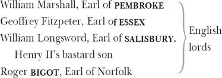

The Life and Death of King John
KING JOHN of England
QUEEN ELINOR , his mother, Henry II's widow
PRINCE HENRY , John's son, a child, later Henry III
BLANCHE of Castile, John's niece
LADY FALCONBRIDGE , Sir Robert's widow
ROBERT Falconbridge, her legitimate son
Philip Falconbridge, the BASTARD , her illegitimate son with King Richard I
James GURNEY , her servant

HUBERT , trusted servant to King John
PETER of Pomfret, a prophet
KING PHILIP II of France
LEWIS 1 the Dauphin, his eldest son
Duke of AUSTRIA , allied to the French
MELUN , a French nobleman
CHATILLON , French nobleman and ambassador to England
CITIZEN of Angiers
CONSTANCE , wife of Geoffrey, John's deceased older brother
ARTHUR , a child, her son and John's nephew, Duke of Bretagne
CARDINAL PANDULPH , Pope Innocent III's representative
A Sheriff and various Lords, Executioners, Heralds, Messengers, Soldiers, Citizens and Attendants
Act 1
Scene 1 2 / running scene 1
Enter King John 3 , Queen Elinor 4 , Pembroke, Essex and Salisbury, with the Chatillon of France
KING JOHN Now, say, Chatillon, what would France 5 with us?
CHATILLON Thus, after greeting, speaks the King of France,
In my behaviour 6 , to the majesty 7 ,
The borrowed 8 majesty, of England here.
QUEEN ELINOR A strange beginning: 'borrowed majesty'!
KING JOHN Silence, good mother: hear the embassy 9 .
CHATILLON Philip of France 10 , in right and true behalf
Of thy deceasèd brother Geoffrey 11 's son,
Arthur Plantagenet 12 , lays most lawful claim
To this fair island and the territories 13 —
To Ireland, Poitiers 14 , Anjou, Touraine, Maine —
Desiring thee to lay aside the sword 15
Which sways 16 usurpingly these several 17 titles,
And put the same into young Arthur's hand,
Thy nephew, and right 18 royal sovereign.
KING JOHN What follows if we disallow of 19 this?
CHATILLON The proud control 20 of fierce and bloody war,
To enforce these rights so forcibly withheld—
KING JOHN Here have we war for war and blood for blood,
Controlment for controlment: so answer France.
CHATILLON Then take my king's defiance from my mouth,
The furthest limit of my embassy 21 .
KING JOHN Bear mine to him, and so depart in peace:
Be thou as lightning in the eyes of France;
For ere 22 thou canst report 23 , I will be there:
The thunder of my cannon shall be heard.
So hence 24 : be thou the trumpet 25 of our wrath
And sullen presage 26 of your own decay 27 .—
An honourable conduct 28 let him have:
To Pembroke
Pembroke, look to't.— Farewell, Chatillon.
Exeunt Chatillon and Pembroke
QUEEN ELINOR What now, my son? Have I not ever said
How that ambitious Constance 29 would not cease
Till she had kindled 30 France 31 and all the world,
Upon 32 the right and party 33 of her son?
This might have been prevented and made whole 34
With very easy arguments 35 of love 36 ,
Which now the manage 37 of two kingdoms must
With fearful bloody issue 38 arbitrate.
KING JOHN Our strong possession and our right for us.
QUEEN ELINOR Your strong possession much more than your right,
Aside to John
Or else it must go wrong with you and me:
So much my conscience whispers in your ear,
Which none but heaven, and you, and I, shall hear.
She whispers to Essex
Enter a Sheriff
ESSEX My liege 39 , here is the strangest controversy 40 ,
Come from the country to be judged by you,
That e'er I heard: shall I produce 41 the men?
KING JOHN Let them approach.—
[Exit Sheriff ]
Our abbeys and our priories shall pay
This expeditious charge 42 .
Enter Robert Falconbridge and Philip [the Bastard ]
What men are you?
BASTARD Your faithful subject I, a gentleman,
Born in Northamptonshire and eldest son,
As I suppose, to Robert Falconbridge,
A soldier, by the honour-giving hand
Of Coeur-de-lion 43 , knighted in the field 44 .
KING JOHN What art thou?
ROBERT The son and heir to that same Falconbridge.
KING JOHN Is that the elder, and art thou the heir?
You came not of one mother then, it seems.
BASTARD Most certain of one mother, mighty king,
That is well known, and, as I think, one father:
But for the certain knowledge of that truth
I put you o'er 45 to heaven 46 , and to my mother;
Of that I doubt, as all men's children may.
QUEEN ELINOR Out on thee 47 , rude 48 man! Thou dost shame thy mother
And wound her honour with this diffidence 49 .
BASTARD I, madam? No, I have no reason for it.
That is my brother's plea and none of mine,
The which if he can prove, a 50 pops me out 51
At least from fair 52 five hundred pound a year:
Heaven guard my mother's honour and my land.
KING JOHN A good blunt fellow.— Why, being younger born,
Aside / To Bastard
Doth he lay claim to thine inheritance?
BASTARD I know not why, except to get the land:
But once 53 he slandered me with bastardy:
But whe'er 54 I be as true begot 55 or no,
That still I lay upon my mother's head 56 :
But that I am as well begot, my liege —
Fair fall 57 the bones that took the pains for me —
Compare our faces, and be judge yourself
If old Sir Robert did beget us both,
And were our father and this son like him:
O old Sir Robert, father, on my knee
I give heaven thanks I was not like 58 to thee!
KING JOHN Why, what a madcap 59 hath heaven lent 60 us here!
QUEEN ELINOR He hath a trick 61 of Coeur-de-lion's face:
The accent of his tongue affecteth 62 him.
Do you not read some tokens 63 of my son
In the large composition 64 of this man?
KING JOHN Mine eye hath well examined his parts 65 ,
And finds them perfect Richard.— Sirrah 66 , speak,
To Robert
What doth move 67 you to claim your brother's land?
BASTARD Because he hath a half-face 68 like my father.
With half that face 69 would he have all my land —
A half-faced groat 70 — five hundred pound a year!
ROBERT My gracious liege, when that 71 my father lived,
Your brother 72 did employ my father much—
BASTARD Well, sir, by this you cannot get my land:
Your tale 73 must be how he employed 74 my mother.
ROBERT And once dispatched him in an embassy
To Germany, there with the emperor
To treat of 75 high 76 affairs touching 77 that time.
Th'advantage of his absence took the king,
And in the meantime sojourned 78 at my father's;
Where how he did prevail 79 , I shame to speak.
But truth is truth: large lengths of seas and shores
Between my father and my mother lay,
As I have heard my father speak himself,
When this same lusty 80 gentleman was got 81 .
Upon his death-bed he by will bequeathed
His lands to me, and took it on his death 82
That this my mother's son was none of his;
And if he were, he came into the world
Full fourteen weeks before the course of time 83 .
Then, good my liege, let me have what is mine,
My father's land, as was my father's will.
KING JOHN Sirrah, your brother is legitimate:
Your father's wife did after wedlock bear him:
And if she did play false 84 , the fault 85 was hers,
Which fault lies on the hazards 86 of all husbands
That marry wives. Tell me, how 87 if my brother 88 ,
Who, as you say, took pains to get this son,
Had of your father claimed this son for his?
In sooth 89 , good friend, your father might have kept
This calf, bred from his cow, from all the world 90 :
In sooth he might. Then if he were my brother's,
My brother might not claim him, nor your father,
Being none of his, refuse him 91 : this concludes 92 ,
My mother's son did get your father's heir,
Your father's heir must have your father's land.
ROBERT Shall then my father's will 93 be of no force
To dispossess that child which is not his?
BASTARD Of no more force to dispossess me, sir,
Than was his will 94 to get me, as I think.
QUEEN ELINOR Whether 95 hadst thou rather be: a Falconbridge,
And like thy brother to enjoy thy land,
Or the reputed 96 son of Coeur-de-lion,
Lord of thy presence 97 , and no land beside?
BASTARD Madam, an if 98 my brother had my shape 99
And I had his, Sir Robert's his like him 100 ,
And if my legs were two such riding-rods 101 ,
My arms, such eel-skins stuffed, my face so thin,
That in 102 mine ear I durst not stick a rose,
Lest men should say, 'Look, where three-farthings 103 goes',
And to his shape 104 were heir to all this land,
Would I might 105 never stir from off this place,
I would give it every foot 106 to have this 107 face:
It would not be Sir Nob 108 in any case 109 .
QUEEN ELINOR I like thee well: wilt thou forsake thy fortune,
Bequeath thy land to him and follow me?
I am a soldier and now bound to France.
BASTARD Brother, take you my land, I'll take my chance.
Your face hath got five hundred pound a year,
Yet sell your face for five pence and 'tis dear 110 .—
Madam, I'll follow you unto the death.
QUEEN ELINOR Nay, I would have you go before me thither 111 .
BASTARD Our country manners give our betters way 112 .
KING JOHN What is thy name?
BASTARD Philip, my liege, so is my name begun,
Philip, good old sir Robert's wife's eldest son.
KING JOHN From henceforth bear his name whose form 113 thou bear'st:
Kneel thou down Philip, but rise 114 more great,
He knights the Bastard
Arise sir Richard, and Plantagenet.
BASTARD Brother by th'mother's side, give me your hand:
My father gave me honour, yours gave land:
Now blessèd be the hour 115 by night or day,
When I was got, Sir Robert was away.
QUEEN ELINOR The very spirit of Plantagenet:
I am thy grandam 116 , Richard: call me so.
BASTARD Madam, by chance, but not by truth 117 : what though 118 ?
Something about 119 a little from the right 120 ,
In at the window 121 , or else o'er the hatch 122 :
Who dares not stir 123 by day must walk 124 by night,
And have 125 is have, however men do catch 126 :
Near or far off 127 , well won is still well shot 128 ,
And I am I, howe'er I was begot.
KING JOHN Go, Falconbridge, now hast thou thy desire:
A landless knight makes thee a landed squire.—
Come, madam, and come, Richard, we must speed 129
For France, for France, for it is more than need 130 .
BASTARD Brother, adieu 131 : good fortune come to thee,
For thou wast got i'th'way of honesty.
Exeunt all but Bastard
A foot 132 of honour better than I was,
But many a many 133 foot of land the worse.
Well, now can I make any Joan 134 a lady.
'Good den 135 , Sir Richard' — 'God-a-mercy 136 , fellow' —
And if his name be George, I'll call him Peter;
For new-made honour doth forget men's names:
'Tis 137 too respective 138 and too sociable
For your conversion 139 . Now your traveller,
He and his toothpick 140 at my worship's mess 141 ,
And when my knightly stomach 142 is sufficed 143 ,
Why then I suck my teeth and catechize 144
My pickèd 145 man of countries 146 : 'My dear sir,'
Thus leaning on mine elbow I begin,
'I shall beseech you'; that is Question now,
And then comes Answer like an Absey book 147 :
'O sir,' says Answer, 'at your best command,
At your employment, at your service, sir.'
'No, sir,' says Question, 'I, sweet sir, at yours.'
And so, ere Answer knows what Question would 148 ,
Saving 149 in dialogue of compliment 150 ,
And talking of the Alps and Apennines,
The Pyrenean and the river Po,
It draws toward supper 151 in conclusion so 152 .
But this is worshipful society,
And fits the mounting 153 spirit like myself;
For he is but a bastard to the time 154
That doth not smack 155 of observation 156 ,
And so am I 157 whether I smack or no:
And not alone in habit 158 and device 159 ,
Exterior form, outward accoutrement 160 ,
But from the inward motion 161 to deliver
Sweet, sweet, sweet poison 162 for the age's tooth 163 ,
Which though I will not practise 164 to deceive,
Yet to avoid deceit I mean to learn 165 ;
For it shall strew 166 the footsteps of my rising 167 .
Enter Lady Falconbridge and James Gurney
But who comes in such haste in riding-robes 168 ?
What woman-post 169 is this? Hath she no husband
That will take pains to blow a horn 170 before her?
O me, 'tis my mother.— How now, good lady?
What brings you here to court so hastily?
LADY FALCONBRIDGE Where is that slave 171 thy brother? Where is he
That holds in chase 172 mine honour up and down 173 ?
BASTARD My brother Robert, old Sir Robert's son,
Colbrand the Giant 174 , that same mighty man,
Is it Sir Robert's son that you seek so?
LADY FALCONBRIDGE Sir Robert's son, ay, thou unreverend 175 boy,
Sir Robert's son. Why scorn'st thou at Sir Robert?
He is Sir Robert's son, and so art thou.
BASTARD James Gurney, wilt thou give us leave 176 a while?
GURNEY Good leave, good Philip.
BASTARD Philip Sparrow 177 , James,
There's toys 178 abroad 179 : anon 180 I'll tell thee more.
Exit James [Gurney ]
Madam, I was not old Sir Robert's son:
Sir Robert might have eat 181 his part in 182 me
Upon Good Friday, and ne'er broke his fast 183 :
Sir Robert could do 184 well, marry 185 , to confess 186 :
Could get 187 me, Sir Robert could not do it;
We know his handiwork 188 : therefore, good mother,
To whom am I beholding 189 for these limbs?
Sir Robert never holp 190 to make this leg.
LADY FALCONBRIDGE Hast thou conspirèd with thy brother too,
That 191 for thine own gain shouldst defend mine honour?
What means this scorn, thou most untoward 192 knave 193 ?
BASTARD Knight, knight, good mother, Basilisco-like 194 !
What! I am dubbed 195 , I have it on my shoulder:
But, mother, I am not Sir Robert's son:
I have disclaimed Sir Robert and my land,
Legitimation 196 , name, and all is gone;
Then, good my mother, let me know my father:
Some proper 197 man, I hope: who was it, mother?
LADY FALCONBRIDGE Hast thou denied thyself a Falconbridge?
BASTARD As faithfully as I deny 198 the devil.
LADY FALCONBRIDGE King Richard Coeur-de-lion was thy father:
By long and vehement suit 199 I was seduced
To make room for him in my husband's bed:
Heaven 200 lay not my transgression to my charge 201 ,
That art the issue 202 of my dear 203 offence
Which was so strongly urged past my defence 204 .
BASTARD Now by this light, were I to get 205 again,
Madam, I would not wish a better father:
Some sins do bear their privilege 206 on earth,
And so doth yours: your fault was not your folly 207 :
Needs must you lay your heart at his dispose 208 ,
Subjected 209 tribute to commanding love,
Against whose fury and unmatchèd force
The aweless 210 lion could not wage the fight,
Nor keep his princely heart from Richard's hand 211 :
He that perforce 212 robs lions of their hearts
May easily win a woman's: ay, my mother,
With all my heart I thank thee for my father:
Who 213 lives and dares but say thou didst not well
When I was got, I'll send his soul to hell.
Come, lady, I will show thee to my kin 214 ,
And they shall say, when Richard me begot,
If thou hadst said him nay 215 , it had been sin;
Who says it was 216 , he lies: I say 'twas not.
Exeunt
Act 2
Scene 1 217 / running scene 2
Enter before Angiers 218 , [on one side ] Philip King of France, Lewis [the ] Dauphin 219 ,
Constance, [and ] Arthur, [on the other side ] Austria 220
With their forces
KING PHILIP Before Angiers well met, brave Austria.—
Arthur, that great forerunner of thy blood 221 ,
Richard that robbed the lion of his heart
And fought the holy wars in Palestine 222 ,
By 223 this brave duke came early to his grave:
And for amends to his posterity 224 ,
At our importance 225 hither is he come,
To spread 226 his colours 227 , boy, in thy behalf,
And to rebuke 228 the usurpation
Of thy unnatural 229 uncle, English John:
Embrace him, love him, give him welcome hither.
ARTHUR God shall forgive you Coeur-de-lion's death
To Austria
The rather that you give his offspring 230 life,
Shadowing 231 their right under your wings of war:
I give you welcome with a powerless 232 hand,
But with a heart full of unstainèd 233 love:
Welcome before the gates of Angiers, Duke.
LEWIS A noble boy: who would not do thee right?
AUSTRIA Upon thy cheek lay I this zealous 234 kiss,
As seal to this indenture 235 of my love:
That to my home I will no more return
Till Angiers and the right thou hast in France,
Together with that pale 236 , that white-faced shore 237 ,
Whose foot spurns 238 back the ocean's roaring tides
And coops 239 from other lands her islanders,
Even till that England, hedged in with the main 240 ,
That water-wallèd bulwark 241 , still 242 secure
And confident from 243 foreign purposes 244 ,
Even till that utmost corner of the west
Salute thee for her king: till then, fair boy,
Will I not think of home, but follow arms 245 .
CONSTANCE O, take his mother's thanks, a widow's thanks,
Till your strong hand shall help to give him strength
To make a more requital to 246 your love.
AUSTRIA The peace of heaven is theirs that lift their swords
In such a just and charitable war.
KING PHILIP Well then, to work: our cannon shall be bent 247
Against the brows 248 of this resisting town.
Call for our chiefest men of discipline 249 ,
To cull 250 the plots 251 of best advantages 252 :
We'll lay before this town our royal bones,
Wade to the market-place in Frenchmen's blood,
But we will 253 make it subject to 254 this boy.
CONSTANCE Stay 255 for an answer to your embassy 256 ,
Lest unadvised 257 you stain your swords with blood:
My lord Chatillon may from England bring
That right in peace which here we urge in war,
And then we shall repent each drop of blood
That hot rash haste so indirectly 258 shed.
Enter Chatillon
KING PHILIP A wonder, lady: lo 259 , upon thy wish,
Our messenger Chatillon is arrived.—
What England 260 says, say briefly, gentle 261 lord:
We coldly 262 pause for thee: Chatillon, speak.
CHATILLON Then turn your forces from this paltry siege,
And stir them up against 263 a mightier task:
England, impatient of 264 your just demands,
Hath put himself in arms: the adverse winds,
Whose leisure 265 I have stayed 266 , have given him time
To land his legions 267 all as soon as I:
His marches are expedient 268 to this town,
His forces strong, his soldiers confident:
With him along is come the Mother-Queen 269 ,
An Ate 270 stirring him to blood and strife:
With her her niece 271 , the lady Blanche of Spain 272 :
With them a bastard of the king's deceased 273 ,
And all th'unsettled humours 274 275 of the land,
Rash, inconsiderate 276 , fiery voluntaries 277 ,
With ladies' faces 278 and fierce dragons' spleens 279 ,
Have sold their fortunes at their native homes,
Bearing their birthrights proudly on their backs 280 ,
To make a hazard of 281 new fortunes here:
In brief, a braver 282 choice 283 of dauntless spirits
Than now the English bottoms 284 have waft 285 o'er
Did never float upon the swelling tide,
To do offence and scathe 286 in Christendom.
Drum beats
The interruption of their churlish 287 drums
Cuts off more circumstance 288 : they are at hand:
To parley 289 or to fight therefore prepare.
KING PHILIP How much unlooked-for is this expedition 290 !
AUSTRIA By how much unexpected, by so much
We must awake endeavour for defence,
For courage mounteth with occasion 291 :
Let them be welcome then: we are prepared.
Enter King [John ] of England, [the ] Bastard, Queen [Elinor ], Blanche, Pembroke and others 292
KING JOHN Peace be to France, if France in peace permit
Our just and lineal 293 entrance to our own 294 ;
If not, bleed France, and peace ascend to heaven,
Whiles we, God's wrathful agent, do correct
Their proud contempt that beats 295 his peace to heaven.
KING PHILIP Peace be to England, if that 296 war return
From France to England, there to live in peace:
England we love, and for that England's 297 sake
With burden of our armour here we sweat:
This toil 298 of ours should be a work 299 of thine;
But thou from loving England art so far,
That thou hast underwrought 300 his 301 lawful king,
Cut off the sequence of posterity 302 ,
Outfacèd 303 infant state 304 , and done a rape
Upon the maiden virtue of the crown:
Look here upon thy brother Geoffrey's 305 face:
Indicates Arthur
These eyes, these brows, were moulded out of his;
This little abstract 306 doth contain that large
Which died in Geoffrey, and the hand of time
Shall draw this brief 307 into as huge a volume:
That Geoffrey was thy elder brother born,
And this his son: England was Geoffrey's right,
And this is Geoffrey's in the name of God:
How comes it then that thou art called a king,
When living blood doth in these temples beat
Which owe 308 the crown that thou o'ermasterest?
KING JOHN From whom hast thou this great commission 309 , France,
To draw my answer from thy articles 310 ?
KING PHILIP From that supernal 311 judge 312 that stirs good thoughts
In any breast of strong authority,
To look into the blots and stains of right:
That judge hath made me guardian to this boy,
Under whose warrant I impeach 313 thy wrong,
And by whose help I mean to chastise it.
KING JOHN Alack 314 , thou dost usurp authority.
KING PHILIP Excuse it is to beat usurping down 315 .
QUEEN ELINOR Who is it thou dost call usurper, France?
CONSTANCE Let me make answer: thy usurping son.
QUEEN ELINOR Out 316 , insolent! Thy bastard shall be king,
That thou mayst be a queen, and check 317 the world.
CONSTANCE My bed was ever to thy son as true
As thine was to thy husband, and this boy
Liker in feature 318 to his father Geoffrey
Than thou and John, in manners 319 being as like
As rain to water, or devil to his dam 320 .
My boy a bastard? By my soul I think
His father never was so true begot:
It cannot be, an if 321 thou wert his mother 322 .
QUEEN ELINOR There's a good mother, boy, that blots 323 thy father.
CONSTANCE There's a good grandam 324 , boy, that would blot 325 thee.
AUSTRIA Peace!
BASTARD Hear the crier 326 .
AUSTRIA What the devil art thou?
BASTARD One that will play the devil 327 , sir, with you,
An a 328 may catch 329 your hide 330 and you alone:
You are the hare of whom the proverb goes,
Whose valour plucks dead lions by the beard 331 .
I'll smoke 332 your skin-coat an 333 I catch you right:
Sirrah, look to't 334 : i'faith I will, i'faith.
BLANCHE O, well did he become 335 that lion's robe
That did disrobe the lion of that robe.
BASTARD It lies as sightly 336 on the back of him
As great Alcides 337 ' shoes upon an ass:
But, ass, I'll take that burden from your back,
Or lay on that 338 shall make your shoulders crack.
AUSTRIA What cracker 339 is this same that deafs 340 our ears
With this abundance of superfluous breath?
KING PHILIP Lewis, determine what we shall do straight 341 .
LEWIS Women and fools, break off your conference.
King John, this is the very sum 342 of all:
England and Ireland, Anjou, Touraine, Maine,
In right of Arthur do I claim of thee:
Wilt thou resign them and lay down thy arms?
KING JOHN My life as soon: I do defy thee, France.
Arthur of Bretagne 343 , yield thee to my hand,
And out of my dear love I'll give thee more
Than e'er the coward hand of France can win.
Submit thee, boy.
QUEEN ELINOR Come to thy grandam, child.
CONSTANCE Do, child, go to it 344 grandam, child:
Give grandam kingdom, and it grandam will
Give it a plum, a cherry, and a fig 345 :
There's a good grandam.
ARTHUR Good my mother, peace.
I would that I were low laid in my grave:
I am not worth this coil 346 that's made for me.
QUEEN ELINOR His mother shames 347 him so, poor boy, he weeps.
CONSTANCE Now shame upon you, whe'er she does or no:
His grandam's wrongs, and not his mother's shames,
Draws those heaven-moving pearls 348 from his poor eyes,
Which heaven shall take in nature of a fee 349 :
Ay, with these crystal beads 350 heaven shall be bribed
To do him justice and revenge on you.
QUEEN ELINOR Thou monstrous 351 slanderer of heaven and earth!
CONSTANCE Thou monstrous injurer of heaven and earth,
Call not me slanderer: thou and thine usurp
The dominations 352 , royalties 353 , and rights
Of this oppressed boy: this is thy eldest son's son 354 ,
Infortunate 355 in nothing but in thee:
Thy sins are visited 356 in this poor child:
The canon of the law 357 is laid on him,
Being but 358 the second generation
Removèd 359 from thy sin-conceiving womb.
KING JOHN Bedlam 360 , have done.
CONSTANCE I have but this to say:
That he is not only plaguèd for her sin,
But God hath made her sin 361 and her the plague
On this removèd issue 362 , plagued for 363 her,
And with her plague her sin: his injury 364
Her injury the beadle 365 to her sin,
All punished in the person of this child,
And all for 366 her: a plague upon her!
QUEEN ELINOR Thou unadvisèd 367 scold, I can produce
A will that bars the title 368 of thy son.
CONSTANCE Ay, who doubts that? A will: a wicked will,
A woman's will 369 , a cankered 370 grandam's will!
KING PHILIP Peace, lady: pause, or be more temperate 371 :
It ill beseems 372 this presence 373 to cry aim 374
To these ill-tunèd 375 repetitions 376 .
Some trumpet 377 summon hither to the walls
These men of Angiers: let us hear them speak
Whose title they admit 378 , Arthur's or John's.
Trumpet sounds. Enter a Citizen upon the walls [with others ]
CITIZEN Who is it that hath warned 379 us to the walls?
KING PHILIP 'Tis France, for England 380 .
KING JOHN England for itself:
You men of Angiers, and my loving subjects—
KING PHILIP You loving men of Angiers, Arthur's subjects,
Our trumpet called you to this gentle 381 parle 382 —
KING JOHN For our advantage; therefore hear us first:
These flags of France that are advancèd 383 here
Before the eye and prospect 384 of your town,
Have hither marched to your endamagement 385 .
The cannons have their bowels 386 full of wrath,
And ready mounted are they to spit forth
Their iron indignation gainst your walls:
All preparation for a bloody siege
And merciless proceeding by these French
Confronts your city's eyes, your winking gates:
And but for our approach, those sleeping stones 387 ,
That as a waist 388 doth girdle you about,
By the compulsion of their ordinance 389
By this time from their fixèd beds of lime 390
Had been dishabited 391 , and wide havoc made
For bloody power 392 to rush upon your peace.
But on the sight of us your lawful king,
Who painfully with much expedient 393 march
Have brought a countercheck 394 before your gates,
To save unscratched your city's threatened cheeks,
Behold, the French, amazed 395 , vouchsafe 396 a parle:
And now instead of bullets 397 wrapped in fire
To make a shaking fever in your walls,
They shoot but calm words, folded up in smoke 398 ,
To make a faithless error 399 in your ears,
Which trust accordingly 400 , kind citizens,
And let us in. Your king, whose laboured 401 spirits,
Forwearied 402 in this action of swift speed,
Craves harbourage 403 within your city walls.
KING PHILIP When I have said 404 , make answer to us both.
Lo 405 , in this right hand, whose protection
He takes Arthur's hand
Is most divinely vowed upon the right 406
Of him it holds, stands young Plantagenet,
Son to the elder brother of this man,
And king o'er him and all that he enjoys 407 :
For 408 this downtrodden equity 409 , we tread 410
In warlike march these greens 411 before your town,
Being no further enemy to you
Than the constraint 412 of hospitable zeal
In the relief of this oppressèd child
Religiously provokes. Be pleasèd then
To pay that duty which you truly owe
To him that owes 413 it, namely this young prince:
And then our arms, like to a muzzled bear,
Save 414 in aspect 415 , hath all offence 416 sealed up 417 :
Our cannons' malice vainly shall be spent 418
Against th'invulnerable clouds of heaven,
And with a blessèd and unvexed 419 retire 420 ,
With unhacked 421 swords and helmets all unbruised,
We will bear home that lusty 422 blood again
Which here we came to spout against your town,
And leave your children, wives, and you in peace.
But if you fondly 423 pass 424 our proffered offer,
'Tis not the roundure 425 of your old-faced walls
Can hide you from our messengers of war 426 ,
Though 427 all these English and their discipline 428
Were harboured in their rude 429 circumference:
Then tell us, shall your city call us lord,
In that behalf which 430 we have challenged it?
Or shall we give the signal to our rage,
And stalk in blood to our possession?
CITIZEN In brief, we are the King of England's subjects:
For him, and in his right, we hold this town.
KING JOHN Acknowledge then the king, and let me in.
CITIZEN That can we not: but he that proves 431 the king,
To him will we prove loyal: till that time
Have we rammed up our gates against the world.
KING JOHN Doth not the crown of England prove the king?
And if not that, I bring you witnesses:
Twice fifteen thousand hearts of England's breed—
BASTARD Bastards, and else 432 .
Aside
KING JOHN To verify our title with their lives.
KING PHILIP As many and as well-born bloods 433 as those—
BASTARD Some bastards too.
Aside
KING PHILIP Stand in his face 434 to contradict his claim.
CITIZEN Till you compound 435 whose right is worthiest,
We for 436 the worthiest hold 437 the right from both.
KING JOHN Then God forgive the sin of all those souls
That to their everlasting residence 438 ,
Before the dew of evening fall, shall fleet 439
In dreadful 440 trial 441 of our kingdom's king.
KING PHILIP Amen, amen. Mount, chevaliers 442 : to arms!
BASTARD Saint George 443 , that swinged 444 the dragon, and e'er since
Sits on's horseback at mine hostess 445 ' door 446 ,
Teach us some fence 447 !— Sirrah, were I at home
To Austria
At your den, sirrah, with your lioness 448 ,
I would set an ox-head to your lion's hide 449 ,
And make a monster 450 of you.
AUSTRIA Peace, no more.
BASTARD O tremble, for you hear the lion roar.
KING JOHN Up higher to the plain, where we'll set forth
In best appointment 451 all our regiments.
BASTARD Speed then, to take advantage 452 of the field.
KING PHILIP It shall be so, and at the other hill
Command the rest to stand. God and our right! 453
Exeunt [French and English forces ]
Citizens remain on the walls
Here after excursions 454 , enter [at one doo r] the Herald of France with Trumpets 455 to the gates
FRENCH HERALD You men of Angiers, open wide your gates,
And let young Arthur Duke of Bretagne in,
Who by the hand of France 456 this day hath made
Much work for tears in many an English mother,
Whose sons lie scattered on the bleeding ground:
Many a widow's husband grovelling 457 lies,
Coldly embracing the discoloured earth:
And victory with little loss doth play
Upon the dancing banners of the French,
Who are at hand, triumphantly displayed 458 ,
To enter conquerors, and to proclaim
Arthur of Bretagne England's king and yours.
Enter [at another door the ] English Herald, with Trumpets
ENGLISH HERALD Rejoice, you men of Angiers, ring your bells:
King John, your king and England's, doth approach,
Commander 459 of this hot malicious 460 day:
Their armours that marched hence 461 so silver-bright
Hither return all gilt 462 with Frenchmen's blood:
There stuck no plume in any English crest 463
That is removèd by a staff 464 of France:
Our colours 465 do return in those same hands
That did display them when we first marched forth:
And like a jolly troop of huntsmen 466 come
Our lusty English, all with purpled hands,
Dyed in the dying slaughter of their foes:
Open your gates and give the victors way.
CITIZEN Heralds, from off our towers we might behold
This Citizen may be Hubert
From first to last, the onset and retire 467
Of both your armies, whose equality
By our best eyes cannot be censurèd 468 :
Blood hath bought blood, and blows have answered blows:
Strength matched with strength, and power confronted power:
Both are alike 469 , and both alike we like 470 .
One must prove greatest. While they weigh so even,
We hold our town for neither, yet for both.
Enter the two Kings with their powers, at several doors [King John accompanied by the Bastard, Queen Elinor, Blanche; King Philip by Lewis the Dauphin and Austria ]
KING JOHN France, hast thou yet more blood to cast away?
Say, shall the current of our right run on,
Whose passage 471 , vexed with thy impediment,
Shall leave his native 472 channel and o'erswell 473
With course disturbed even thy confining shores,
Unless thou let his silver water keep
A peaceful progress 474 to the ocean.
KING PHILIP England, thou hast not saved one drop of blood
In this hot trial more than we of France;
Rather, lost more. And by this hand I swear,
That sways 475 the earth this climate 476 overlooks,
Before we will lay down our just-borne 477 arms,
We'll put thee down 478 , gainst whom these arms we bear,
Or add a royal number 479 to the dead,
Gracing the scroll that tells of 480 this war's loss
With slaughter coupled to the name of kings.
BASTARD Ha, majesty! How high thy glory towers 481 ,
When the rich blood of kings is set on fire:
O, now doth Death line his dead chaps 482 with steel:
The swords of soldiers are his teeth, his fangs:
And now he feasts, mousing 483 the flesh of men
In undetermined differences 484 of kings.
Why stand these royal fronts 485 amazèd thus?
Cry havoc 486 , kings: back to the stainèd field
You equal potents 487 , fiery kindled spirits!
Then let confusion 488 of one part 489 confirm
The other's peace 490 : till then, blows, blood and death.
KING JOHN Whose party do the townsmen yet admit 491 ?
KING PHILIP Speak, citizens, for England. Who's your king?
CITIZEN The King of England, when we know the king.
KING PHILIP Know him in us, that here hold up 492 his right.
KING JOHN In us, that are our own great deputy
And bear possession of our person here 493 ,
Lord of our presence 494 , Angiers, and of you.
CITIZEN A greater power than we denies all this,
And till it be undoubted, we do lock
Our former scruple in our strong-barred gates:
Kings of 495 our fear, until our fears resolved
Be by some certain 496 king, purged and deposed 497 .
BASTARD By heaven, these scroyles 498 of Angiers flout 499 you, kings,
And stand securely on their battlements,
As in a theatre, whence they gape and point
At your industrious 500 scenes and acts 501 of death.
Your royal presences be ruled by me:
Do like the mutines 502 of Jerusalem 503 ,
Be friends awhile, and both conjointly bend 504
Your sharpest deeds of malice on this town.
By east and west let France and England mount 505
Their battering cannon chargèd 506 to the mouths,
Till their soul-fearing 507 clamours have brawled down 508
The flinty ribs of this contemptuous city:
I'd play 509 incessantly upon these jades 510 ,
Even till unfencèd 511 desolation 512
Leave them as naked as the vulgar 513 air:
That done, dissever your united strengths,
And part your mingled colours once again:
Turn face to face, and bloody point 514 to point:
Then in a moment Fortune shall cull forth 515
Out of one side her happy minion 516 ,
To whom in favour she shall give the day 517 ,
And kiss him with a glorious victory:
How like you this wild 518 counsel, mighty states 519 ?
Smacks it not something 520 of the policy 521 ?
KING JOHN Now, by the sky that hangs above our heads,
I like it well.— France, shall we knit 522 our powers,
And lay 523 this Angiers even with the ground,
Then after fight who 524 shall be king of it?
BASTARD An if 525 thou hast the mettle 526 of a king,
Being wronged as we are by this peevish 527 town,
Turn thou the mouth of thy artillery,
As we will ours, against these saucy 528 walls,
And when that 529 we have dashed them to the ground,
Why then defy each other, and pell-mell 530 ,
Make work upon ourselves 531 , for heaven or hell 532 .
KING PHILIP Let it be so: say, where will you assault?
KING JOHN We from the west will send destruction
Into this city's bosom.
AUSTRIA I from the north.
KING PHILIP Our thunder 533 from the south
Shall rain their drift 534 of bullets on this town.
BASTARD O prudent discipline 535 ! From north to south:
Austria and France shoot in each other's mouth:
I'll stir them to it.— Come, away, away!
CITIZEN Hear us, great kings: vouchsafe 536 awhile to stay,
And I shall show you peace and fair-faced league 537 :
Win you this city without stroke or wound:
Rescue those breathing lives 538 to die in beds,
That here come sacrifices for the field.
Persever 539 not, but hear me, mighty kings.
KING JOHN Speak on with favour 540 : we are bent 541 to hear.
CITIZEN That daughter there of Spain, the lady Blanche,
Is niece to England: look upon the years 542
Of Lewis the dauphin and that lovely maid.
If lusty 543 love should go in quest of beauty,
Where should he find it fairer than in Blanche?
If zealous love should go in search of virtue,
Where should he find it purer than in Blanche?
If love ambitious sought a match of birth 544 ,
Whose veins bound 545 richer blood than Lady Blanche?
Such as she is, in beauty, virtue, birth,
Is the young dauphin every way complete 546 :
If not complete of 547 , say he is not she 548 :
And she again wants 549 nothing, to name want,
If want it be not that she is not he 550 :
He is the half part of a blessèd man,
Left to be finishèd 551 by such as she:
And she a fair divided 552 excellence,
Whose fullness of perfection lies in him.
O, two such silver currents when they join
Do glorify the banks that bound them in:
And two such shores to two such streams made one,
Two such controlling bounds 553 shall you be, kings,
To these two princes 554 , if you marry them:
This union shall do more than battery 555 can
To our fast-closèd 556 gates: for at this match 557 ,
With swifter spleen 558 than powder 559 can enforce,
The mouth of passage 560 shall we fling wide ope 561 ,
And give you entrance: but without this match,
The sea enragèd is not half so deaf,
Lions more confident, mountains and rocks
More free from motion, no, not Death himself
In mortal 562 fury half so peremptory 563 ,
As we to keep this city.
BASTARD Here's a stay 564
That shakes the rotten carcass of old Death
Out of his rags. Here's a large mouth, indeed,
That spits forth death and mountains, rocks and seas,
Talks as familiarly of roaring lions
As maids of thirteen do of puppy-dogs.
What cannoneer begot this lusty blood 565 ?
He speaks plain cannon 566 : fire, and smoke, and bounce 567 :
He gives the bastinado 568 with his tongue:
Our ears are cudgelled: not a word of his
But buffets 569 better than a fist of France:
Zounds 570 ! I was never so bethumped 571 with words
Since I first called my brother's father dad 572 .
QUEEN ELINOR Son, list 573 to this conjunction 574 , make this match,
Give with our niece a dowry large enough:
For, by this knot, thou shalt so surely tie
Thy now unsured 575 assurance to the crown
That yon 576 green 577 boy 578 shall have no sun 579 to ripe
The bloom that promiseth a mighty fruit.
I see a yielding in the looks of France:
Mark 580 how they whisper: urge them while their souls
Are capable of 581 this ambition,
Lest zeal 582 , now melted by the windy breath
Of soft petitions 583 , pity and remorse 584 ,
Cool and congeal again to what it was.
CITIZEN Why answer not the double majesties
This friendly treaty 585 of our threatened town?
KING PHILIP Speak England first, that hath been forward 586 first
To speak unto this city: what say you?
KING JOHN If that the dauphin there, thy princely son,
Can in this book of beauty read 'I love 587 ',
Her dowry shall weigh equal with a queen:
For Anjou 588 and fair Touraine, Maine, Poitiers,
And all that we upon this side the 589 sea —
Except this city now by us besieged —
Find liable 590 to our crown and dignity,
Shall gild her bridal bed and make her rich
In titles, honours, and promotions 591 ,
As she in beauty, education, blood,
Holds hand with 592 any princess of the world.
KING PHILIP What say'st thou, boy? Look in the lady's face.
LEWIS I do, my lord, and in her eye I find
A wonder, or a wondrous miracle,
The shadow 593 of myself formed in her eye:
Which, being but the shadow of your son 594 ,
Becomes a sun and makes your son a shadow 595 :
I do protest I never loved myself
Till now infixèd 596 I beheld myself
Drawn in the flattering table 597 of her eye.
Whispers with Blanche
BASTARD Drawn 598 in the flattering table of her eye,
Hanged in the frowning wrinkle of her brow,
And quartered 599 in her heart, he doth espy 600
Himself love's traitor: this is pity now,
That hanged and drawn and quartered there should be
In such a love 601 so vile a lout as he.
BLANCHE My uncle's will 602 in this respect is mine:
If he see aught 603 in you that makes him like,
That anything 604 he sees which moves his liking,
I can with ease translate 605 it to my will:
Or if you will, to speak more properly 606 ,
I will enforce 607 it eas'ly to my love.
Further I will not flatter you, my lord,
That 608 all I see in you is worthy 609 love,
Than this: that nothing do I see in you,
Though churlish 610 thoughts themselves should be your judge,
That I can find should merit 611 any hate.
KING JOHN What say these young ones? What say you, my niece?
BLANCHE That she is bound in honour still 612 to do
What you in wisdom still vouchsafe 613 to say.
KING JOHN Speak then, Prince Dauphin, can you love this lady?
LEWIS Nay, ask me if I can refrain from love,
For I do love her most unfeignedly 614 .
KING JOHN Then do I give Volquessen, Touraine, Maine,
Poitiers and Anjou, these five provinces,
With her to thee, and this addition more:
Full 615 thirty thousand mark 616 s of English coin.
Philip of France, if thou be pleased withal 617 ,
Command thy son and daughter to join hands.
KING PHILIP It likes 618 us well, young princes: close 619 your hands.
AUSTRIA And your lips too, for I am well assured 620
That I did so when I was first assured 621 .
Lewis and Blanche join hands and kiss
KING PHILIP Now, citizens of Angiers, ope your gates,
Let in that amity which you have made,
For at Saint Mary's chapel presently 622
The rites of marriage shall be solemnized.
Is not the lady Constance in this troop?
I know she is not, for this match made up 623
Her presence would have interrupted much.
Where is she and her son? Tell me, who 624 knows.
LEWIS She is sad and passionate 625 at your highness' tent.
KING PHILIP And by my faith this league that we have made
Will give her sadness very little cure.—
Brother of England, how may we content
This widow lady? In her right we came,
Which we, God knows, have turned another way,
To our own vantage.
KING JOHN We will heal up all,
For we'll create young Arthur Duke of Bretagne
And Earl of Richmond, and this rich fair town
We make him lord of. Call the lady Constance:
Some speedy messenger bid her repair 626
To our solemnity 627 : I trust we shall,
[Exit Salisbury? ]
If not fill up the measure 628 of her will,
Yet in some measure 629 satisfy her so
That we shall stop her exclamation 630 .
Go we as well as haste will suffer 631 us
To this unlooked-for, unpreparèd pomp 632 .
Exeunt [all but the Bastard ]
BASTARD Mad world, mad kings, mad composition 633 !
John, to stop Arthur's title in the whole 634 ,
Hath willingly departed 635 with a part,
And France, whose armour conscience buckled on,
Whom zeal and charity brought to the field
As God's own soldier, rounded 636 in the ear
With 637 that same purpose-changer, that sly devil,
That broker 638 that still breaks 639 the pate 640 of faith 641 ,
That daily break-vow, he that wins 642 of all,
Of kings, of beggars, old men, young men, maids,
Who 643 having no external thing 644 to lose
But the word 'maid' 645 , cheats the poor maid of that:
That smooth-faced 646 gentleman, tickling 647 commodity 648 ,
Commodity, the bias 649 of the world,
The world who of itself is peisèd 650 well,
Made to run even 651 upon even ground,
Till this advantage, this vile-drawing 652 bias,
This sway 653 of motion, this commodity,
Makes it take head from 654 all indifferency 655 ,
From all direction, purpose, course, intent:
And this same bias, this commodity,
This bawd 656 , this broker, this all-changing 657 word,
Clapped on 658 the outward eye 659 of fickle France,
Hath drawn him from his own determined 660 aid 661 ,
From a resolved 662 and honourable war,
To a most base 663 and vile-concluded peace.
And why rail I on 664 this commodity?
But for 665 because he hath not wooed me yet:
Not that I have the power to clutch 666 my hand,
When his fair angels 667 would salute 668 my palm;
But for 669 my hand, as unattempted 670 yet,
Like a poor beggar, raileth on the rich.
Well, whiles I am a beggar, I will rail,
And say there is no sin but to be rich:
And being rich, my virtue then shall be
To say there is no vice but beggary:
Since kings break faith upon 671 commodity,
Gain be my lord, for I will worship thee.
Exit
Scene 2 / running scene 3
Enter Constance, Arthur and Salisbury
CONSTANCE Gone to be married? Gone to swear a peace?
To Salisbury
False blood to false blood joined! Gone to be friends?
Shall Lewis have Blanche, and Blanche those provinces?
It is not so, thou hast misspoke 672 , misheard:
Be well advised 673 , tell o'er thy tale again.
It cannot be, thou dost but 674 say 'tis so.
I trust 675 I may not trust thee, for thy word
Is but the vain breath of a common man 676 :
Believe me, I do not believe thee, man:
I have a king's oath to the contrary.
Thou shalt be punished for thus frighting 677 me,
For I am sick and capable of 678 fears:
Oppressed with wrongs, and therefore full of fears:
A widow, husbandless, subject to fears,
A woman naturally born to fears;
And though 679 thou now confess thou didst but jest
With my vexed spirits, I cannot take a truce 680 ,
But they will quake and tremble all this day.
What dost thou mean by shaking of thy head?
Why dost thou look so sadly 681 on my son?
What means that hand upon that breast of thine?
Why holds thine eye that lamentable 682 rheum 683 ,
Like a proud 684 river peering o'er his 685 bounds?
Be these sad 686 signs confirmers of thy words?
Then speak again, not all thy former tale,
But this one word: whether thy tale be true.
SALISBURY As true as I believe you think them 687 false
That give you cause to prove 688 my saying true.
CONSTANCE O, if thou teach me to believe this sorrow,
Teach thou this sorrow how to make me die,
And let belief and life encounter 689 so
As doth the fury of two desperate men,
Which in the very meeting fall and die.
Lewis marry Blanche!— O boy, then where art thou?
To Arthur
France friend with England, what becomes of me?—
Fellow, be gone: I cannot brook 690 thy sight:
To Salisbury
This news hath made thee a most ugly man.
SALISBURY What other harm have I, good lady, done,
But spoke the harm that is by others done?
CONSTANCE Which harm within itself so heinous is
As it makes harmful all that speak of it.
ARTHUR I do beseech you, madam, be content 691 .
CONSTANCE If thou that bidd'st me be content wert 692 grim 693 ,
Ugly and sland'rous 694 to thy mother's womb,
Full of unpleasing blots and sightless 695 stains,
Lame, foolish, crooked 696 , swart 697 , prodigious 698 ,
Patched 699 with foul moles and eye-offending marks,
I would not care, I then would be content,
For then I should not love thee, no, nor thou
Become 700 thy great birth, nor deserve a crown.
But thou art fair 701 , and at thy birth, dear boy,
Nature and Fortune joined to make thee great.
Of Nature's gifts thou mayst with lilies boast,
And with the half-blown 702 rose. But Fortune, O,
She is corrupted, changed, and won from thee:
Sh'adulterates 703 hourly 704 with thine uncle John,
And with her golden 705 hand hath plucked on 706 France
To tread down fair respect of sovereignty 707 ,
And made his majesty 708 the bawd to theirs 709 .
France is a bawd to Fortune and King John,
That strumpet 710 Fortune, that usurping John:—
Tell me, thou fellow 711 , is not France 712 forsworn 713 ?
To Salisbury
Envenom 714 him with words 715 , or get thee gone
And leave those woes alone, which I alone
Am bound to underbear 716 .
SALISBURY Pardon me, madam,
I may not go without you to the kings.
CONSTANCE Thou mayst, thou shalt: I will not go with thee:
I will instruct my sorrows to be proud 717 ,
For grief is proud and makes his owner stoop.
To me and to the state 718 of my great grief
Let kings assemble: for my grief's so great
That no supporter but the huge firm earth
Can hold it up: here I and sorrows sit:
She sits upon the ground
Here is my throne: bid kings come bow to it.
[Exit Salisbury with Arthur ]
Constance remains seated
Act 3
Scene 1 / running scene 3 continues
Enter King John, King Philip, Lewis, Blanche, Queen Elinor, the Bastard [and ] Austria
KING PHILIP 'Tis true 719 , fair daughter 720 , and this blessèd day
Ever in France shall be kept festival:
To solemnize this day the glorious sun
Stays in his course 721 and plays the alchemist 722 ,
Turning with splendour of his precious eye
The meagre cloddy earth to glittering gold:
The yearly course that brings this day about
Shall never see it but a holy day 723 .
CONSTANCE A wicked day, and not a holy day!
Rising
What hath this day deserved? What hath it done,
That it in golden letters 724 should be set
Among the high tides 725 in the calendar?
Nay, rather turn this day out of the week,
This day of shame, oppression, perjury.
Or if it must stand still 726 , let wives with child 727
Pray that their burdens may not fall 728 this day,
Lest that their hopes prodigiously 729 be crossed 730 :
But 731 on this day let seamen fear no wreck 732 :
No bargains break that are not this day made 733 ;
This day all things begun come to ill end,
Yea, faith itself to hollow falsehood change.
KING PHILIP By heaven, lady, you shall have no cause
To curse the fair proceedings of this day:
Have I not pawned 734 to you my majesty 735 ?
CONSTANCE You have beguiled 736 me with a counterfeit
Resembling majesty, which, being touched and tried 737 ,
Proves valueless: you are forsworn 738 , forsworn:
You came in arms 739 to spill mine enemies' blood,
But now in arms 740 you strengthen it with yours 741 .
The grappling vigour and rough frown of war
Is cold in amity and painted 742 peace,
And our 743 oppression hath made up 744 this league 745 :
Arm, arm, you heavens, against these perjured kings!
A widow cries: be husband to me, heavens!
Let not the hours of this ungodly day
Wear out 746 the days 747 in peace; but, ere sun set,
Set armèd discord 'twixt these perjured kings:
Hear me, O, hear me!
AUSTRIA Lady Constance, peace!
CONSTANCE War, war, no peace! Peace is to me a war:
O Limoges 748 , O Austria, thou dost shame
That bloody spoil 749 750 : thou slave, thou wretch, thou coward:
Thou little valiant, great in villainy,
Thou ever strong upon the stronger side;
Thou Fortune's champion 751 , that dost never fight
But when her humorous 752 ladyship is by 753
To teach thee safety 754 : thou art perjured too,
And sooth'st up greatness 755 . What a fool art thou,
A ramping 756 fool, to brag, and stamp, and swear
Upon my party 757 : thou cold-blooded slave,
Hast thou not spoke like thunder on my side?
Been sworn my soldier, bidding me depend
Upon thy stars, thy fortune, and thy strength,
And dost thou now fall over 758 to my foes?
Thou wear a lion's hide! Doff 759 it for shame,
And hang a calf's-skin 760 on those recreant 761 limbs.
AUSTRIA O, that a man should speak those words to me!
BASTARD And hang a calf's-skin on those recreant limbs.
AUSTRIA Thou dar'st not say so, villain, for thy life.
BASTARD And hang a calf's-skin on those recreant limbs.
KING JOHN We like not this: thou dost forget thyself.
Enter Pandulph 762
KING PHILIP Here comes the holy legate 763 of the Pope.
CARDINAL PANDULPH Hail, you anointed deputies of heaven.—
To thee, King John, my holy errand is:
I Pandulph, of fair Milan cardinal,
And from Pope Innocent 764 the legate here,
Do in his name religiously 765 demand
Why thou against the Church, our holy mother,
So wilfully dost spurn 766 ; and force perforce 767
Keep Stephen Langton 768 , chosen archbishop
Of Canterbury, from that holy see 769 :
This, in our foresaid 770 holy father's name,
Pope Innocent, I do demand of thee.
KING JOHN What earthy 771 name to interrogatories 772
Can test 773 the free breath of a sacred king?
Thou canst not, cardinal, devise a name
So slight, unworthy, and ridiculous
To charge 774 me to an answer, as the Pope.
Tell him this tale, and from the mouth of England
Add thus much more, that no Italian priest
Shall tithe 775 or toll 776 in our dominions:
But as we, under heaven, are supreme head,
So, under him, that great supremacy 777 ,
Where 778 we do reign, we will alone uphold 779
Without th'assistance of a mortal hand:
So tell the Pope, all reverence set apart 780
To him and his usurped authority.
KING PHILIP Brother of England, you blaspheme 781 in this.
KING JOHN Though you and all the kings of Christendom
Are led so grossly 782 by this meddling priest 783 ,
Dreading the curse 784 that money may buy out 785 ,
And by the merit of vile 786 gold, dross 787 , dust,
Purchase corrupted pardon of 788 a man,
Who in that sale sells pardon from himself 789 :
Though you and all the rest so grossly led
This juggling 790 witchcraft with revenue cherish 791 ,
Yet I alone, alone do me oppose 792
Against the Pope, and count his friends my foes.
CARDINAL PANDULPH Then by the lawful power that I have,
Thou shalt stand cursed and excommunicate 793 :
And blessèd shall he be that doth revolt
From his allegiance to an heretic 794 :
And meritorious shall that hand be called,
Canonizèd and worshipped as a saint,
That takes away by any secret course
Thy hateful life.
CONSTANCE O, lawful let it be
That I have room 795 with Rome to curse awhile:
Good Father Cardinal, cry thou 'Amen'
To my keen 796 curses; for without my wrong 797
There is no tongue hath power to curse him right 798 .
CARDINAL PANDULPH There's law and warrant 799 , lady, for my curse.
CONSTANCE And for mine too: when law can do no right,
Let it be lawful that law bar no wrong 800 :
Law cannot give my child his kingdom here;
For he that holds 801 his kingdom holds the law:
Therefore, since law itself is perfect 802 wrong,
How can the law forbid my tongue to curse?
CARDINAL PANDULPH Philip of France, on peril of a curse,
Let go the hand of that arch-heretic 803 ,
And raise the power of France 804 upon his head 805 ,
Unless he do submit himself to Rome.
QUEEN ELINOR Look'st thou pale, France? Do not let go thy hand.
CONSTANCE Look to that 806 , devil, lest that France repent,
And by disjoining hands, hell lose a soul.
AUSTRIA King Philip, listen to the cardinal.
BASTARD And hang a calf's-skin on his recreant limbs.
AUSTRIA Well, ruffian, I must pocket up 807 these wrongs,
Because—
BASTARD Your breeches best may carry them.
KING JOHN Philip, what say'st thou to the cardinal?
CONSTANCE What should he say, but as the cardinal 808 ?
LEWIS Bethink you 809 , father, for the difference 810
Is purchase 811 of a heavy curse from Rome,
Or the light 812 loss of England for a friend:
Forgo the easier.
BLANCHE That's the curse of Rome.
CONSTANCE O Lewis, stand fast: the devil tempts thee here
In likeness of a new untrimmèd 813 bride.
BLANCHE The lady Constance speaks not from her faith,
But from her need 814 .
CONSTANCE O, if thou grant my need,
Which only lives but by 815 the death of faith 816 ,
That need must needs 817 infer this principle,
That faith would live again by death of need:
O then tread down my need, and faith mounts up:
Keep my need up, and faith is trodden down.
KING JOHN The king is moved 818 , and answers not to this.
CONSTANCE O, be removed 819 from him, and answer well!
To King Philip
AUSTRIA Do so, King Philip, hang no more in doubt.
BASTARD Hang 820 nothing but a calf's-skin, most sweet lout.
KING PHILIP I am perplexed, and know not what to say.
CARDINAL PANDULPH What canst thou say but will perplex thee more,
If thou stand excommunicate and cursed?
KING PHILIP Good reverend father, make my person yours 821 ,
And tell me how you would bestow yourself 822 .
This royal hand and mine are newly knit,
And the conjunction of our inward souls
Married in league, coupled and linked together
With all religious strength of sacred vows:
The latest 823 breath that gave the sound of words
Was deep-sworn faith, peace, amity, true love
Between our kingdoms and our royal selves,
And even 824 before this truce, but new 825 before,
No longer than we well could wash our hands
To clap 826 this royal bargain 827 up of peace,
Heaven knows, they were besmeared and overstained 828
With slaughter's pencil 829 , where revenge did paint
The fearful 830 difference 831 of incensèd kings:
And shall these hands, so lately purged of blood,
So newly joined in love, so strong in both,
Unyoke this seizure 832 and this kind regreet 833 ?
Play fast and loose 834 with faith, so 835 jest with heaven,
Make such unconstant 836 children of ourselves,
As now again to snatch our palm from palm?
Unswear faith sworn, and on the marriage-bed
Of smiling peace to march a bloody 837 host 838 ,
And make a riot on the gentle brow 839
Of true sincerity? O holy sir,
My reverend father, let it not be so:
Out of your grace, devise, ordain 840 , impose
Some gentle order, and then we shall be blest
To do your pleasure and continue friends.
CARDINAL PANDULPH All form is formless, order orderless,
Save what is opposite to England's love.
Therefore to arms, be champion of our Church,
Or let the Church, our mother, breathe her curse,
A mother's curse, on her revolting 841 son:
France, thou mayst hold a serpent by the tongue 842 ,
A casèd 843 lion by the mortal 844 paw,
A fasting tiger safer by the tooth,
Than keep in peace that hand which thou dost hold.
KING PHILIP I may disjoin my hand, but not my faith 845 .
CARDINAL PANDULPH So mak'st thou faith 846 an enemy to faith,
And like a civil war set'st oath to 847 oath,
Thy tongue against thy tongue. O, let thy vow
First made to heaven, first be to heaven performed,
That is, to be the champion of our Church:
What since 848 thou swor'st 849 is sworn against thyself,
And may not be performèd by thyself,
For that which thou hast sworn to do amiss
Is not amiss when it is truly done 850 :
And being not done, where doing tends to 851 ill,
The truth is then most done not doing it:
The better act 852 of purposes mistook 853
Is to mistake again 854 : though indirect 855 ,
Yet indirection thereby grows direct,
And falsehood falsehood cures, as fire cools fire
Within the scorchèd veins of one new burned 856 :
It is religion 857 that doth make vows kept,
But thou hast sworn against religion:
By what thou swear'st 858 against the thing thou swear'st,
And mak'st an oath the surety for thy truth 859
Against an oath the truth: thou art unsure 860
To swear, swears only not to be forsworn 861 ,
Else what a mockery should it be to swear?
But thou dost swear only to be forsworn,
And most forsworn, to keep what thou dost swear:
Therefore thy later vows against thy first
Is in thyself rebellion to thyself:
And better conquest never canst thou make
Than arm thy constant and thy nobler part 862 s
Against these giddy loose suggestions:
Upon which better part our prayers come in,
If thou vouchsafe them. But if not, then know
The peril of our curses light 863 on thee
So heavy as 864 thou shalt not shake them off,
But in despair die under their black 865 weight.
AUSTRIA Rebellion 866 , flat 867 rebellion!
BASTARD Will't not be 868 ?
Will not a calf's-skin stop 869 that mouth of thine?
LEWIS Father, to arms!
BLANCHE Upon thy wedding day?
Against the blood that thou hast marrièd 870 ?
What, shall our feast be kept 871 with slaughtered men?
Shall braying trumpets and loud churlish drums,
Clamours of hell, be measures 872 to our pomp?
O husband, hear me: ay, alack, how new
Is 'husband' in my mouth! Even for that name,
Which till this time my tongue did ne'er pronounce,
Upon my knee I beg, go not to arms
Against mine uncle.
She may kneel here
CONSTANCE O, upon my knee made hard with kneeling,
She may kneel
I do pray to thee, thou virtuous dauphin,
Alter not the doom 873 forethought 874 by heaven.
BLANCHE Now shall I see thy love: what motive may
Be stronger with thee than the name of wife?
CONSTANCE That which upholdeth him that thee upholds 875 :
His honour:— O, thine honour, Lewis, thine honour!
To Lewis
LEWIS I muse 876 your majesty doth seem so cold,
To King Philip
When such profound respects 877 do pull you on.
CARDINAL PANDULPH I will denounce 878 a curse upon his head.
KING PHILIP Thou shalt not need. England, I will fall from 879 thee.
CONSTANCE O, fair return of banished majesty!
She may rise
QUEEN ELINOR O, foul revolt of French inconstancy!
KING JOHN France, thou shalt rue 880 this hour within this hour.
BASTARD Old Time the clock-setter, that bald 881 sexton Time,
Is it as he will? Well then, France shall rue.
BLANCHE The sun's o'ercast with blood: fair day, adieu 882 !
Which is the side that I must go withal?
I am with both, each army hath a hand,
And in their rage, I having hold of both,
They whirl asunder and dismember 883 me.
Husband, I cannot pray that thou mayst win:—
Uncle, I needs must pray that thou mayst lose:—
Father 884 , I may not wish the fortune thine:—
Grandam, I will not wish thy wishes thrive:
Whoever wins, on that side shall I lose:
Assurèd loss before the match be played.
LEWIS Lady, with me, with me thy fortune lies.
He may help her rise
BLANCHE There where my fortune lives, there my life dies.
KING JOHN Cousin 885 , go draw our puissance 886 together.
[Exit the Bastard ]
France, I am burned up with inflaming wrath,
A rage whose heat hath this condition 887 :
That nothing can allay, nothing but blood,
The blood, and dearest-valued 888 blood, of France.
KING PHILIP Thy rage shall burn thee up, and thou shalt turn
To ashes, ere our blood shall quench that fire:
Look to thyself, thou art in jeopardy.
KING JOHN No more than he that threats 889 . To arms let's hie 890 !
Exeunt
Scene 2 / running scene 4
Alarums 891 , excursions 892 . Enter [the ] Bastard, with Austria's head
BASTARD Now, by my life, this day grows wondrous hot:
Some airy devil 893 hovers in the sky
And pours down mischief. Austria's head lie there,
He puts down Austria's head
While Philip 894 breathes 895 .
Enter [King ] John, Arthur [and ] Hubert 896
KING JOHN Hubert, keep 897 this boy.— Philip, make up 898 :
My mother is assailèd 899 in our tent,
And ta'en 900 , I fear.
BASTARD My lord, I rescued her:
Her highness is in safety, fear you not:
But on, my liege 901 , for very little pains
Will bring this labour 902 to an happy end 903 .
Exeunt
Alarums, excursions, retreat 904 . Enter King John, Queen Elinor, Arthur, [the ] Bastard, Hubert, [and ] Lords
KING JOHN So shall it be: your grace shall stay behind 905
To Queen Elinor
So strongly guarded:— Cousin, look not sad:
To Arthur
Thy grandam loves thee; and thy uncle will
As dear be to thee as thy father was.
ARTHUR O, this will make my mother die with grief.
KING JOHN Cousin, away for England! Haste before 906 ,
To Bastard
And ere our coming see thou shake the bags
Of hoarding abbots: imprisoned angels 907
Set at liberty: the fat ribs of peace
Must by the hungry now be fed upon:
Use our commission 908 in his 909 utmost force.
BASTARD Bell, book and candle 910 shall not drive me back,
When gold and silver becks 911 me to come on.
I leave your highness:— grandam, I will pray,
If ever I remember to be holy,
For your fair safety: so I kiss your hand.
QUEEN ELINOR Farewell, gentle 912 Coz 913 cousin.
KING JOHN Coz, farewell.
[Exit the Bastard ]
QUEEN ELINOR Come hither, little kinsman: hark, a word.
To Arthur
KING JOHN Come hither, Hubert.
He takes Hubert aside
O my gentle Hubert,
We owe thee much: within this wall of flesh
There is a soul counts thee her creditor
And with advantage 914 means to pay 915 thy love:
And, my good friend, thy voluntary 916 oath
Lives in this bosom 917 , dearly cherishèd.
Give me thy hand: I had a thing to say,
But I will fit it with some better tune 918 .
By heaven, Hubert, I am almost ashamed
To say what good respect 919 I have of thee.
HUBERT I am much bounden 920 to your majesty.
KING JOHN Good friend, thou hast no cause to say so yet,
But thou shalt have: and creep time ne'er so slow,
Yet it shall come for me to do thee good.
I had a thing to say, but let it go:
The sun is in the heaven, and the proud day,
Attended with the pleasures of the world,
Is all too wanton 921 and too full of gauds 922
To give me audience 923 : if the midnight bell 924
Did with his iron tongue and brazen 925 mouth
Sound on 926 into the drowsy race 927 of night:
If this same were a churchyard where we stand,
And thou possessèd with a thousand wrongs:
Or if that surly spirit, melancholy,
Had baked thy blood and made it heavy, thick,
Which else 928 runs tickling up and down the veins,
Making that idiot 929 , laughter, keep 930 men's eyes
And strain their cheeks to idle merriment,
A passion 931 hateful to my purposes:
Or if that thou couldst see me without eyes,
Hear me without thine ears, and make reply
Without a tongue, using conceit 932 alone,
Without eyes, ears and harmful sound of words:
Then, in despite 933 of broad-eyed watchful 934 day,
I would into thy bosom pour my thoughts.
But, ah, I will not: yet I love thee well,
And by my troth 935 , I think thou lov'st me well.
HUBERT So well, that what 936 you bid me undertake,
Though that my death were adjunct to 937 my act,
By heaven, I would do it.
KING JOHN Do not I know thou wouldst?
Good Hubert, Hubert, Hubert, throw thine eye
On yon 938 young boy: I'll tell thee what, my friend,
He is a very serpent in my way,
And whereso'er this foot of mine doth tread,
He lies before me: dost thou understand me?
Thou art his keeper.
HUBERT And I'll keep him so 939 ,
That he shall not offend your majesty.
KING JOHN Death.
HUBERT My lord?
KING JOHN A grave.
HUBERT He shall not live.
KING JOHN Enough.
I could be merry now: Hubert, I love thee.
Well, I'll not say what I intend for thee:
Remember.— Madam, fare you well:
I'll send those powers 940 o'er to your majesty.
QUEEN ELINOR My blessing go with thee.
KING JOHN For England, cousin 941 , go.
Hubert shall be your man 942 , attend on you
With all true duty.— On toward Calais, ho!
Exeunt [Queen Elinor at one door, the rest at another ]
Scene 3 / running scene 5
Enter King Philip, Lewis, Cardinal Pandulph [and ] Attendants
KING PHILIP So by a roaring tempest on the flood 943 ,
A whole armado 944 of convicted 945 sail
Is scattered and disjoined from fellowship 946 .
CARDINAL PANDULPH Courage and comfort: all shall yet go well.
KING PHILIP What can go well when we have run 947 so ill?
Are we not beaten? Is not Angiers lost?
Arthur ta'en prisoner? Divers 948 dear friends slain?
And bloody 949 England 950 into England gone,
O'erbearing 951 interruption 952 , spite 953 of France?
LEWIS What he hath won, that hath he fortified:
So hot 954 a speed with such advice 955 disposed 956 ,
Such temperate 957 order in so fierce a cause,
Doth want example 958 : who hath read or heard
Of any kindred 959 action like 960 to this?
KING PHILIP Well could I bear that England had this praise,
So 961 we could find some pattern 962 of our shame.
Enter Constance
Distracted, with her hair down
Look, who comes here! A grave 963 unto a soul:
Holding th'eternal spirit against her will,
In the vile prison of afflicted breath:
I prithee, lady, go away with me.
CONSTANCE Lo, now: now see the issue 964 of your peace 965 .
KING PHILIP Patience, good lady: comfort, gentle Constance.
CONSTANCE No, I defy 966 all counsel 967 , all redress 968 ,
But 969 that which ends all counsel, true redress:
Death, death, O amiable 970 , lovely death:
Thou odoriferous 971 stench: sound 972 rottenness:
Arise forth from the couch of lasting 973 night,
Thou hate and terror to prosperity,
And I will kiss thy detestable bones,
And put my eyeballs in thy vaulty 974 brows,
And ring these fingers with thy household worms,
And stop this gap of breath 975 with fulsome 976 dust,
And be a carrion 977 monster like thyself:
Come, grin on me, and I will think thou smil'st
And buss 978 thee as thy wife: misery's love,
O, come to me!
KING PHILIP O fair affliction 979 , peace!
CONSTANCE No, no, I will not, having breath to cry:
O, that my tongue were in the thunder's mouth!
Then with a passion would I shake the world,
And rouse from sleep that fell 980 anatomy 981
Which cannot hear a lady's feeble voice,
Which scorns a modern 982 invocation 983 .
CARDINAL PANDULPH Lady, you utter madness, and not sorrow.
CONSTANCE Thou art not holy to belie 984 me so:
I am not mad: this hair I tear is mine:
My name is Constance: I was Geoffrey's wife:
Young Arthur is my son, and he is lost:
I am not mad: I would to heaven I were,
For then, 'tis like 985 I should forget myself:
O, if I could, what grief should I forget!
Preach some philosophy to make me mad,
And thou shalt be canonized, cardinal:
For, being not mad, but sensible of 986 grief,
My reasonable part 987 produces reason
How I may be delivered of 988 these woes,
And teaches me to kill or hang myself:
If I were mad, I should forget my son,
Or madly think a babe of clouts 989 990 were he:
I am not mad: too well, too well I feel
The different 991 plague 992 of each calamity.
KING PHILIP Bind up those tresses 993 : O, what love I note
In the fair multitude of those her hairs!
Where but by chance a silver drop 994 hath fallen,
Even to that drop ten thousand wiry friends 995
Do glue themselves in sociable 996 grief,
Like true, inseparable, faithful loves,
Sticking together in calamity.
CONSTANCE To England, if you will 997 .
KING PHILIP Bind up your hairs.
CONSTANCE Yes, that I will: and wherefore 998 will I do it?
I tore them from their bonds and cried aloud
'O, that these hands could so redeem 999 my son,
As they have given these hairs their liberty!'
But now I envy at 1000 their liberty,
And will again commit them to their bonds,
Because my poor child is a prisoner.
She binds up her hair
And, Father Cardinal, I have heard you say
That we shall see and know 1001 our friends in heaven:
If that be true, I shall see my boy again;
For since the birth of Cain 1002 , the first male child,
To him that did but yesterday suspire 1003 ,
There was not such a gracious 1004 creature born:
But now will canker-sorrow 1005 eat my bud 1006
And chase the native 1007 beauty from his cheek,
And he will look as hollow as a ghost,
As dim 1008 and meagre 1009 as an ague's fit 1010 ,
And so 1011 he'll die: and rising 1012 so again,
When I shall meet him in the court of heaven
I shall not know 1013 him: therefore never, never
Must I behold my pretty Arthur more.
CARDINAL PANDULPH You hold too heinous 1014 a respect 1015 of grief.
CONSTANCE He talks to me that never had a son.
KING PHILIP You are as fond of 1016 grief as of your child.
CONSTANCE Grief fills the room 1017 up of my absent child:
Lies in his bed, walks up and down with me,
Puts on his pretty looks, repeats his words,
Remembers 1018 me of all his gracious parts,
Stuffs out his vacant garments with his form 1019 ;
Then have I reason to be fond of grief?
Fare you well: had you such a loss as I,
I could give better comfort than you do.
She unbinds her hair
I will not keep this form upon my head,
When there is such disorder in my wit:
O lord, my boy, my Arthur, my fair son,
My life, my joy, my food, my all the world:
My widow-comfort, and my sorrows' cure!
Exit
KING PHILIP I fear some outrage 1020 , and I'll follow her.
Exit
LEWIS There's nothing in this world can make me joy 1021 :
Life is as tedious as a twice-told tale,
Vexing the dull 1022 ear of a drowsy man;
And bitter shame hath spoiled the sweet word's 1023 taste
That 1024 it yields nought but shame and bitterness.
CARDINAL PANDULPH Before the curing of a strong disease,
Even in the instant 1025 of repair 1026 and health,
The fit 1027 is strongest: evils that take leave,
On their departure most of all show evil:
What have you lost by losing of this day 1028 ?
LEWIS All days of glory, joy and happiness.
CARDINAL PANDULPH If you had 1029 won it, certainly you had.
No, no: when Fortune means 1030 to men most good,
She looks upon them with a threat'ning eye:
'Tis strange to think how much King John hath lost
In this which he accounts 1031 so clearly won:
Are not you grieved that Arthur is his prisoner?
LEWIS As heartily as he is glad he hath him.
CARDINAL PANDULPH Your mind is all as youthful as your blood.
Now hear me speak with a prophetic spirit:
For even the breath of what I mean to speak
Shall blow each dust, each straw, each little rub 1032 ,
Out of the path which shall directly lead
Thy foot to England's throne. And therefore mark 1033 :
John hath seized Arthur, and it cannot be
That whiles warm life plays in that infant 1034 's veins,
The misplaced 1035 John should entertain 1036 an hour,
One minute, nay, one quiet breath of rest.
A sceptre snatched with an unruly hand
Must be as boisterously 1037 maintained as gained:
And he that stands upon a slipp'ry place
Makes nice of no 1038 vile hold to stay 1039 him up:
That 1040 John may stand, then Arthur needs must fall:
So be it, for it cannot be but so.
LEWIS But what shall I gain by young Arthur's fall?
CARDINAL PANDULPH You, in the right of Lady Blanche your wife,
May then make all the claim that Arthur did.
LEWIS And lose it, life and all, as Arthur did.
CARDINAL PANDULPH How green 1041 you are, and fresh in this old world!
John lays you plots 1042 : the times conspire with you:
For he that steeps 1043 his safety in true 1044 blood
Shall find but bloody safety and untrue 1045 .
This act, so evilly born, shall cool the hearts
Of all his people and freeze up their zeal 1046 ,
That none so small advantage 1047 shall step forth
To check 1048 his reign 1049 , but they will cherish it:
No natural exhalation 1050 in the sky,
No scope 1051 of nature, no distempered 1052 day,
No common wind, no customèd 1053 event,
But they will pluck away 1054 his 1055 natural cause 1056
And call them meteors, prodigies 1057 , and signs,
Abortives 1058 , presages 1059 , and tongues of heaven,
Plainly denouncing 1060 vengeance upon John.
LEWIS Maybe he will not touch young Arthur's life,
But hold 1061 himself 1062 safe in his prisonment 1063 .
CARDINAL PANDULPH O sir, when he shall hear of your approach 1064 ,
If that young Arthur be not gone already,
Even at that news he dies: and then the hearts
Of all his people shall revolt from him,
And kiss the lips of 1065 unacquainted 1066 change,
And pick 1067 strong matter of 1068 revolt and wrath
Out of the bloody fingers' ends of John 1069 .
Methinks I see this hurly 1070 all on foot 1071 :
And O, what better matter breeds 1072 for you
Than I have named! The Bastard Falconbridge
Is now in England, ransacking the Church,
Offending charity: if but a dozen French
Were there in arms, they would be as a call 1073
To train 1074 ten thousand English to their side,
Or, as a little snow, tumbled about,
Anon 1075 becomes a mountain. O noble dauphin,
Go with me to the king: 'tis wonderful
What may be wrought 1076 out of their discontent,
Now that their souls are top-full 1077 of offence 1078 .
For England go: I will whet on 1079 the king.
LEWIS Strong reasons make strange actions 1080 : let us go:
If you say ay 1081 , the king will not say no.
Exeunt
Act 4
Scene 1 1082 / running scene 6
Enter Hubert and Executioners
With a rope and irons
HUBERT Heat me 1083 these irons 1084 hot, and look 1085 thou stand
Within 1086 the arras 1087 : when I strike my foot
Upon the bosom of the ground, rush forth
And bind the boy which you shall find with me
Fast to the chair: be heedful 1088 : hence, and watch.
FIRST EXECUTIONER I hope your warrant will bear out 1089 the deed.
HUBERT Uncleanly scruples 1090 : Fear not you: look to't.
The Executioners withdraw behind the arras
Young lad, come forth; I have to say with 1091 you.
Enter Arthur
ARTHUR Good morrow, Hubert.
HUBERT Good morrow, little 1092 prince.
ARTHUR As little prince, having so great a title
To be more prince, as may be 1093 . You are sad 1094 .
HUBERT Indeed, I have been merrier.
ARTHUR 'Mercy 1095 on me!
Methinks nobody should be sad but I:
Yet, I remember, when I was in France,
Young gentlemen would be as sad 1096 as night
Only 1097 for wantonness 1098 : by my christendom 1099 ,
So 1100 I were out of prison and kept sheep,
I should be as merry as the day is long:
And so I would be here, but that I doubt 1101
My uncle practises 1102 more harm to me:
He is afraid of me, and I of him:
Is it my fault that I was Geoffrey's son?
No, indeed, is't not: and I would 1103 to heaven
I were your son, so 1104 you would love me, Hubert.
HUBERT If I talk to him, with his innocent prate 1105
Aside
He will awake my mercy which lies dead:
Therefore I will be sudden and dispatch 1106 .
ARTHUR Are you sick, Hubert? You look pale today:
In sooth 1107 , I would you were a little sick,
That I might sit all night and watch 1108 with you.
I warrant 1109 I love you more than you do me.
HUBERT His words do take possession of my bosom.—
Aside
Read here, young Arthur.— How now, foolish rheum 1110 !
Showing a paper/Aside
Turning dispiteous torture out of door 1111 ?
I must be brief 1112 , lest resolution 1113 drop
Out at mine eyes in tender womanish tears.
Can you not read it? Is it not fair writ 1114 ?
ARTHUR Too fairly, Hubert, for so foul effect 1115 :
Must you with hot irons burn out both mine eyes?
HUBERT Young boy, I must.
ARTHUR And will you?
HUBERT And I will.
ARTHUR Have you the heart? When your head did but ache,
I knit 1116 my handkercher 1117 about your brows,
The best I had, a princess wrought it 1118 me,
And I did never ask it you 1119 again:
And with my hand at midnight held your head,
And like the watchful 1120 minutes to the hour,
Still and anon 1121 cheered up the heavy 1122 time,
Saying 'What lack you 1123 ?' and 'Where lies your grief 1124 ?'
Or 'What good love 1125 may I perform for you?'
Many a poor man's son would have lien 1126 still
And ne'er have spoke a loving word to you:
But you at your sick service 1127 had a prince:
Nay, you may think my love was crafty 1128 love,
And call it cunning. Do, an if 1129 you will.
If heaven be pleased that you must use me ill 1130 ,
Why then you must. Will you put out mine eyes?
These eyes that never did, nor never shall,
So much as frown on you.
HUBERT I have sworn to do it:
And with hot irons must I burn them out.
ARTHUR Ah, none but in this iron age 1131 would do it:
The iron of itself, though heat 1132 red-hot,
Approaching near these eyes, would drink my tears
And quench this 1133 fiery indignation,
Even in the matter 1134 of mine innocence:
Nay, after that, consume away in rust
But for containing 1135 fire to harm mine eye:
Are you more stubborn-hard than hammered iron?
And if an angel should have 1136 come to me
And told me Hubert should put out 1137 mine eyes,
I would not have believed him: no tongue but Hubert's.
HUBERT Come forth.
Stamps; Executioners come forward
Do as I bid you do.
ARTHUR O, save me, Hubert, save me! My eyes are out
Even with the fierce looks of these bloody men.
HUBERT Give me the iron, I say, and bind him here.
ARTHUR Alas, what need you be so boist'rous-rough?
I will not struggle: I will stand stone-still:
For heaven sake, Hubert, let me not be bound:
Nay, hear me, Hubert, drive these men away,
And I will sit as quiet as a lamb:
I will not stir, nor winch 1138 , nor speak a word,
Nor look upon the iron angerly 1139 :
Thrust but these men away, and I'll forgive you,
Whatever torment you do put me to.
HUBERT Go, stand within: let me alone with him.
FIRST EXECUTIONER I am best pleased to be from 1140 such a deed.
[Exeunt Executioners ]
ARTHUR Alas, I then have chid 1141 away my friend!
He hath a stern look, but a gentle heart:
Let him come back, that his compassion may
Give life to yours.
HUBERT Come, boy, prepare yourself.
ARTHUR Is there no remedy 1142 ?
HUBERT None, but to lose your eyes.
ARTHUR O heaven, that there were but a mote 1143 in yours,
A grain, a dust, a gnat, a wandering hair,
Any annoyance 1144 in that precious sense 1145 :
Then feeling what small things are boisterous 1146 there,
Your vile intent must needs seem horrible.
HUBERT Is this your promise? Go to 1147 , hold your tongue.
ARTHUR Hubert, the utterance of a brace 1148 of tongues
Must needs want pleading 1149 for a pair of eyes:
Let me not 1150 hold my tongue: let me not, Hubert:
Or, Hubert, if you will, cut out my tongue,
So I may keep mine eyes. O, spare mine eyes,
Though to no use but still 1151 to look on you.
Lo, by my troth 1152 , the instrument is cold
And would not harm me.
HUBERT I can heat it, boy.
ARTHUR No, in good sooth 1153 : the fire is dead with grief,
Being create 1154 for comfort, to be used
In undeserved extremes 1155 : see else 1156 yourself:
There is no malice in this burning coal:
The breath of heaven hath blown his spirit out,
And strewed repentant ashes on his head.
HUBERT But with my breath I can revive it, boy.
ARTHUR An if you do, you will but 1157 make it blush
And glow with shame of your proceedings, Hubert:
Nay, it perchance 1158 will sparkle in 1159 your eyes,
And, like a dog that is compelled to fight,
Snatch 1160 at his master that doth tarre 1161 him on.
All things that you should use to do me wrong
Deny their office 1162 : only you do lack
That mercy, which fierce fire and iron extends 1163 ,
Creatures of note for mercy, lacking uses 1164 .
HUBERT Well, see to live: I will not touch thine eye
For all the treasure that thine uncle owes 1165 :
Yet am I sworn and I did purpose 1166 , boy,
With this same very iron to burn them out.
ARTHUR O, now you look like Hubert. All this while
You were disguisèd.
HUBERT Peace; no more. Adieu.
Your uncle must not know but 1167 you are dead.
I'll fill these doggèd 1168 spies with false reports:
And, pretty child, sleep doubtless 1169 , and secure,
That Hubert for the wealth of all the world,
Will not offend 1170 thee.
ARTHUR O heaven! I thank you, Hubert.
HUBERT Silence, no more: go closely 1171 in with me.
Much danger do I undergo for thee.
Exeunt
Scene 2 1172 / running scene 7
Enter King John, Pembroke, Salisbury and other Lords
King John ascends the throne
KING JOHN Here once again we sit: once again crowned,
And looked upon, I hope, with cheerful eyes.
PEMBROKE This 'once again', but that your highness pleased,
Was once 1173 superfluous: you were crowned before,
And that high royalty was ne'er plucked off:
The faiths of men ne'er stainèd with revolt:
Fresh 1174 expectation troubled not the land
With any longed-for change or better state 1175 .
SALISBURY Therefore, to be possessed 1176 with double pomp 1177 ,
To guard 1178 a title that was rich before,
To gild 1179 refinèd gold, to paint the lily,
To throw a perfume on the violet,
To smooth the ice, or add another hue
Unto the rainbow, or with taper-light 1180
To seek the beauteous eye of heaven 1181 to garnish,
Is wasteful and ridiculous excess.
PEMBROKE But 1182 that your royal pleasure 1183 must be done,
This act is as an ancient tale new told,
And, in the last repeating, troublesome,
Being urgèd at a time unseasonable 1184 .
SALISBURY In this the antique 1185 and well-noted 1186 face
Of plain old form 1187 is much disfigurèd 1188 ,
And, like a shifted 1189 wind unto a sail,
It 1190 makes the course of thoughts to fetch about 1191 ,
Startles and frights consideration 1192 ,
Makes sound 1193 opinion sick and truth suspected,
For putting on so new a fashioned 1194 robe.
PEMBROKE When workmen strive to do better than well,
They do confound 1195 their skill in covetousness,
And oftentimes excusing of a fault
Doth make the fault the worse by th'excuse 1196 :
As patches set upon a little breach 1197
Discredit 1198 more in hiding of the fault
Than did the fault before it was so patched.
SALISBURY To this effect, before you were new crowned 1199 ,
We breathed 1200 our counsel: but it pleased your highness
To overbear 1201 it, and we are all well pleased,
Since all and every part of what we would
Doth make a stand at 1202 what your highness will.
KING JOHN Some reasons of this double coronation
I have possessed you with 1203 , and think them strong.
And more, more strong, than lesser is my fear 1204 ,
I shall indue 1205 you with: meantime but ask
What you would have reformed that is not well,
And well shall you perceive how willingly
I will both hear and grant you your requests.
PEMBROKE Then I, as one that am the tongue 1206 of these,
To sound 1207 the purposes of all their hearts,
Both for myself and them 1208 , but chief of all
Your safety, for the which myself and them
Bend 1209 their best studies 1210 , heartily request
Th'enfranchisement 1211 of Arthur, whose restraint
Doth move the murmuring lips of discontent
To break into this dangerous argument:
If what in rest 1212 you have, in right 1213 you hold,
Why then your fears, which, as they say, attend 1214
The steps of wrong 1215 , should move you to mew up 1216
Your tender 1217 kinsman, and to choke his days
With barbarous ignorance and deny his youth
The rich advantage of good exercise 1218 .
That 1219 the time's enemies may not have this 1220
To grace occasions 1221 , let it be our suit 1222
That you have bid us ask his liberty,
Which for our goods 1223 we do no further ask
Than, whereupon our weal 1224 on you depending
Counts 1225 it your weal, he have his liberty.
Enter Hubert
KING JOHN Let it be so: I do commit 1226 his youth
To your direction 1227 .—
Hubert, what news with you?
Taking him to one side
PEMBROKE This is the man should do 1228 the bloody deed:
He showed his warrant to a friend of mine:
The image of a wicked heinous 1229 fault
Lives 1230 in his eye: that close 1231 aspect 1232 of his
Do 1233 show the mood of a much troubled breast,
And I do fearfully believe 'tis done,
What we so feared he had a charge 1234 to do.
SALISBURY The colour 1235 of the king doth come and go
Between his purpose and his conscience,
Like heralds 'twixt 1236 two dreadful battles 1237 set:
His passion is so ripe 1238 , it needs must break 1239 .
PEMBROKE And when it breaks, I fear will issue thence
The foul corruption of a sweet child's death.
KING JOHN We cannot hold 1240 mortality's strong hand.—
Good lords, although my will to give 1241 is living,
To Lords
The suit which you demand is gone and dead.
He tells us Arthur is deceased tonight 1242 .
SALISBURY Indeed we feared his sickness was past cure.
PEMBROKE Indeed we heard how near his death he was
Before the child himself felt he was sick:
This must be answered 1243 either here or hence 1244 .
KING JOHN Why do you bend such solemn brows 1245 on me?
Think you I bear the shears of destiny 1246 ?
Have I commandment on 1247 the pulse of life?
SALISBURY It is apparent 1248 foul play, and 'tis shame
That greatness 1249 should so grossly 1250 offer 1251 it:
So 1252 thrive it in your game 1253 , and so farewell.
PEMBROKE Stay yet, Lord Salisbury: I'll go with thee,
And find th'inheritance of this poor child,
His little kingdom of a forcèd 1254 grave.
That blood which owed 1255 the breadth of all this isle,
Three foot of it doth hold: bad world the while 1256 :
This must not be thus borne: this will break out
To all our sorrows, and ere long I doubt 1257 .
Exeunt [Lords ]
KING JOHN They burn in indignation: I repent:
There is no sure 1258 foundation set 1259 on blood:
No certain life achieved by others' death.
Enter [a ] Messenger
A fearful 1260 eye thou hast. Where is that blood
That I have seen inhabit in those cheeks?
So foul a sky clears not without a storm:
Pour down thy weather 1261 : how goes all in France?
MESSENGER From France to England 1262 : never such a power 1263
For any foreign preparation 1264
Was levied 1265 in the body 1266 of a land.
The copy 1267 of your speed is learned by them:
For when you should be told they do prepare,
The tidings comes that they are all arrived.
KING JOHN O, where hath our intelligence 1268 been drunk?
Where hath it slept? Where is my mother's care 1269 ,
That such an army could be drawn 1270 in France,
And she not hear of it?
MESSENGER My liege, her ear
Is stopped with dust: the first of April died
Your noble mother; and as I hear, my lord,
The lady Constance in a frenzy 1271 died
Three days before: but this from Rumour's tongue
I idly 1272 heard: if true or false I know not.
KING JOHN Withhold thy speed, dreadful Occasion 1273 :
O, make a league 1274 with me, till I have pleased
My discontented peers. What? Mother dead?
How wildly 1275 then walks 1276 my estate 1277 in France!—
Under whose conduct 1278 came those powers of France
That thou for truth giv'st out 1279 are landed here?
MESSENGER Under the dauphin.
KING JOHN Thou hast made me giddy
With these ill tidings.
Enter [the ] Bastard and Peter of Pomfret 1280
Now, what says the world
To your proceedings 1281 ? Do not seek to stuff
My head with more ill news, for it is full.
BASTARD But if you be afeard 1282 to hear the worst,
Then let the worst unheard fall on your head 1283 .
KING JOHN Bear with me cousin, for I was amazed 1284
Under the tide 1285 : but now I breathe again
Aloft 1286 the flood, and can give audience
To any tongue, speak it of what it will.
BASTARD How I have sped 1287 among the clergymen,
The sums I have collected shall express 1288 :
But as I travelled hither through the land,
I find the people strangely fantasied 1289 :
Possessed with rumours, full of idle 1290 dreams,
Not knowing what they fear, but full of fear.
And here's a prophet that I brought with me
From forth the streets of Pomfret, whom I found
With many hundreds treading on his heels 1291 :
To whom he sung in rude 1292 harsh-sounding rhymes,
That ere the next Ascension Day 1293 at noon,
Your highness should deliver up 1294 your crown.
KING JOHN Thou idle dreamer, wherefore didst thou so?
PETER Foreknowing that the truth will fall out so.
KING JOHN Hubert, away with him: imprison him,
And on that day at noon, whereon he says
I shall yield up my crown, let him be hanged.
Deliver him to safety 1295 , and return,
For I must use thee.—
[Exeunt Hubert and Peter ]
O my gentle 1296 cousin,
Hear'st thou the news abroad 1297 , who are arrived?
BASTARD The French, my lord: men's mouths are full of it.
Besides, I met Lord Bigot and Lord Salisbury,
With eyes as red as new-enkindled fire,
And others more, going to seek the grave
Of Arthur, who they say is 1298 killed tonight 1299
On your suggestion 1300 .
KING JOHN Gentle kinsman, go,
And thrust thyself into their companies.
I have a way to win their loves again:
Bring them before me.
BASTARD I will seek them out.
KING JOHN Nay, but make haste: the better foot before 1301 .
O, let me have no subject enemies 1302 ,
When adverse 1303 foreigners affright my towns
With dreadful pomp of stout 1304 invasion.
Be Mercury 1305 , set feathers to thy heels,
And fly like thought from them to me again.
BASTARD The spirit of the time 1306 shall teach me speed.
Exit
KING JOHN Spoke like a sprightful 1307 noble gentleman.
Go after him: for he perhaps shall need
Some messenger betwixt 1308 me and the peers,
And be thou he.
MESSENGER With all my heart, my liege.
[Exit ]
KING JOHN My mother dead!
Enter Hubert
HUBERT My lord, they say five moons were seen tonight 1309 :
Four fixèd, and the fifth did whirl about
The other four in wondrous 1310 motion.
KING JOHN Five moons?
HUBERT Old men and beldams 1311 in the streets
Do prophesy upon it 1312 dangerously:
Young Arthur's death is common in their mouths,
And when they talk of him, they shake their heads
And whisper one 1313 another in the ear.
And he that speaks doth grip the hearer's wrist,
Whilst he that hears makes fearful action 1314 ,
With wrinkled brows, with nods, with rolling eyes.
I saw a smith stand with his hammer, thus,
The whilst his iron did on the anvil cool,
With open mouth swallowing a tailor's news,
Who, with his shears and measure in his hand,
Standing on slippers, which his nimble haste
Had falsely thrust upon contrary feet 1315 ,
Told of a many thousand 1316 warlike French
That were embattailèd 1317 and ranked 1318 in Kent.
Another lean, unwashed artificer 1319
Cuts off his tale, and talks of Arthur's death.
KING JOHN Why seek'st thou to possess 1320 me with these fears?
Why urgest thou 1321 so oft 1322 young Arthur's death?
Thy hand hath murdered him: I had a mighty cause 1323
To wish him dead, but thou hadst none to kill him.
HUBERT No had 1324 , my lord! Why, did you not provoke 1325 me?
KING JOHN It is the curse of kings to be attended
By slaves that take their humours 1326 for a warrant
To break within the bloody house of life 1327 ,
And on the winking 1328 of authority
To understand a law 1329 , to know the meaning
Of dangerous 1330 majesty, when perchance 1331 it frowns
More upon humour 1332 than advised respect 1333 .
HUBERT Here is your hand 1334 and seal for what I did.
He shows a paper
KING JOHN O, when the last account 1335 'twixt heaven and earth
Is to be made, then shall this hand and seal
Witness against us to damnation.
How oft the sight of means to do 1336 ill deeds
Make deeds ill done! Hadst not thou been by 1337 ,
A fellow by the hand of nature marked 1338 ,
Quoted 1339 and signed 1340 to do a deed of shame,
This murder had not come into my mind.
But taking note of thy abhorred aspect 1341 ,
Finding thee fit for bloody villainy,
Apt, liable 1342 to be employed in danger,
I faintly 1343 broke 1344 with thee of Arthur's death:
And thou, to be endearèd to a king,
Made it no conscience 1345 to destroy a prince.
HUBERT My lord—
KING JOHN Hadst thou but shook thy head or made a pause
When I spake darkly 1346 what I purposèd,
Or turned an eye of doubt upon my face,
As 1347 bid me tell my tale in express 1348 words,
Deep shame had 1349 struck me dumb, made me break off,
And those thy fears might have wrought 1350 fears in me.
But thou didst understand me by my signs
And didst in signs again parley 1351 with sin:
Yea, without stop, didst let thy heart consent,
And consequently thy rude 1352 hand to act
The deed, which both our tongues held vile to name.
Out of my sight, and never see me more!
My nobles leave me, and my state 1353 is braved 1354 ,
Even at my gates, with ranks of foreign powers;
Nay, in the body of this fleshly land 1355 ,
This kingdom, this confine 1356 of blood and breath,
Hostility and civil tumult 1357 reigns
Between my conscience and my cousin's death.
HUBERT Arm you against your other enemies:
I'll make a peace between your soul and you.
Young Arthur is alive: this hand of mine
Is yet a maiden 1358 and an innocent hand,
Not painted with the crimson spots of blood.
Within this bosom never entered yet
The dreadful motion 1359 of a murderous thought;
And you have slandered nature in my form 1360 ,
Which, howsoever rude exteriorly 1361 ,
Is yet the cover of a fairer mind
Than to be butcher of an innocent child.
KING JOHN Doth Arthur live? O, haste thee to the peers:
Throw 1362 this report on their incensèd rage,
And make them tame 1363 to their obedience.
Forgive the comment that my passion made
Upon thy feature, for my rage was blind,
And foul imaginary 1364 eyes of blood 1365
Presented thee more hideous than thou art.
O, answer not, but to my closet 1366 bring
The angry lords with all expedient haste.
I conjure 1367 thee but slowly: run more fast.
Exeunt
Scene 3 1368 / running scene 8
Enter Arthur, on the walls
Disguised as a ship-boy
ARTHUR The wall is high, and yet will I leap down.
Good ground, be pitiful and hurt me not:
There's few or none do know me: if they did,
This ship-boy's semblance 1369 hath disguised me quite 1370 .
I am afraid, and yet I'll venture 1371 it.
If I get down, and do not break my limbs,
I'll find a thousand shifts 1372 to get away:
As good to die and go, as die and stay 1373 .
He leaps down
O me! My uncle's spirit is in these stones:
Heaven take my soul, and England keep my bones!
Dies
Enter Pembroke, Salisbury and Bigot
SALISBURY Lords, I will meet him 1374 at Saint Edmundsbury 1375 :
It is our safety 1376 , and we must embrace
This gentle 1377 offer of the perilous time.
PEMBROKE Who brought that letter from the cardinal?
SALISBURY The count Melun, a noble lord of France,
Whose private 1378 with me of the dauphin's love
Is much more general 1379 than these lines import.
BIGOT Tomorrow morning let us meet him then.
SALISBURY Or rather then set forward; for 'twill be
Two long days' journey, lords, or ere 1380 we 1381 meet.
Enter [the ] Bastard
BASTARD Once more today well met, distempered 1382 lords:
The king by me requests your presence straight 1383 .
SALISBURY The king hath dispossessed himself 1384 of us:
We will not line 1385 his thin bestainèd 1386 cloak 1387
With our pure honours, nor attend the foot 1388
That leaves the print of blood where'er it walks.
Return and tell him so: we know the worst.
BASTARD Whate'er you think, good words, I think, were best.
SALISBURY Our griefs 1389 , and not our manners, reason 1390 now.
BASTARD But there is little reason in your grief.
Therefore 'twere reason you had manners now.
PEMBROKE Sir, sir, impatience 1391 hath his privilege 1392 .
BASTARD 'Tis true, to hurt his master, no man's else 1393 .
SALISBURY This is the prison. What is he lies here?
He sees Arthur's body
PEMBROKE O, death, made proud with pure and princely beauty:
The earth had not a hole to hide this deed.
SALISBURY Murder, as 1394 hating what himself hath done,
Doth lay it open 1395 to urge on revenge.
BIGOT Or when he 1396 doomed this beauty to a grave,
Found it too precious-princely for a grave.
SALISBURY Sir Richard 1397 , what think you? You have beheld,
Or have you read, or heard: or could you think 1398 ,
Or do you almost think 1399 , although you see,
That you do see 1400 ? Could thought, without this object 1401 ,
Form such another? This is the very top,
The height, the crest 1402 , or crest unto the crest,
Of murder's arms 1403 : this is the bloodiest shame,
The wildest savagery, the vilest stroke,
That ever wall-eyed 1404 wrath or staring rage
Presented to the tears of soft remorse 1405 .
PEMBROKE All murders past do stand excused 1406 in 1407 this:
And this, so sole 1408 and so unmatchable,
Shall give a holiness, a purity,
To the yet unbegotten sin of times 1409 ,
And prove a deadly bloodshed but a jest,
Exampled 1410 by this heinous 1411 spectacle.
BASTARD It is a damnèd and a bloody work:
The graceless 1412 action of a heavy 1413 hand,
If that it be the work of any hand.
SALISBURY If that it be the work of any hand?
We had a kind of light 1414 what would ensue:
It is the shameful work of Hubert's hand,
The practice 1415 and the purpose of the king:
From whose obedience I forbid my soul,
Kneeling before this ruin of sweet life,
And breathing to his breathless 1416 excellence
The incense 1417 of a vow, a holy vow:
Never to taste the pleasures of the world,
Never to be infected 1418 with delight,
Nor conversant with ease and idleness,
Till I have set 1419 a glory to this hand,
By giving it the worship 1420 of revenge.
PEMBROKE and BIGOT Our souls religiously 1421 confirm 1422 thy words.
Enter Hubert
HUBERT Lords, I am hot with haste in seeking you:
Arthur doth live: the king hath sent for you.
SALISBURY O, he is bold, and blushes not at death.—
Avaunt 1423 , thou hateful villain, get thee gone!
HUBERT I am no villain.
SALISBURY Must I rob the law 1424 ?
Draws his sword
BASTARD Your sword is bright 1425 , sir: put it up 1426 again.
SALISBURY Not till I sheathe it in a murderer's skin 1427 .
HUBERT Stand back, Lord Salisbury, stand back, I say:
By heaven, I think my sword's as sharp as yours.
Draws his sword
I would not have you, lord, forget yourself,
Nor tempt 1428 the danger 1429 of my true defence 1430 ;
Lest I, by marking 1431 of your rage, forget
Your worth, your greatness and nobility.
BIGOT Out, dunghill! Dar'st thou brave 1432 a nobleman?
HUBERT Not for my life: but yet I dare defend
My innocent life against an emperor.
SALISBURY Thou art a murderer.
HUBERT Do not prove me so 1433 :
Yet 1434 I am none. Whose tongue soe'er 1435 speaks false,
Not truly speaks: who speaks not truly, lies.
PEMBROKE Cut him to pieces.
BASTARD Keep the peace, I say.
SALISBURY Stand by 1436 , or I shall gall 1437 you, Falconbridge.
BASTARD Thou wert better gall the devil, Salisbury:
If thou but frown on me, or stir thy foot,
Or teach thy hasty spleen 1438 to do me shame,
I'll strike thee dead. Put up thy sword betime 1439 ,
Or I'll so maul you and your toasting-iron 1440 ,
That you shall think the devil is come from hell.
BIGOT What wilt thou do, renownèd Falconbridge?
Second 1441 a villain and a murderer?
HUBERT Lord Bigot, I am none.
BIGOT Who killed this prince?
HUBERT 'Tis not an hour since I left him well:
I honoured him, I loved him, and will weep
My date 1442 of life out for his sweet life's loss.
SALISBURY Trust not those cunning waters of his eyes,
For villainy is not without such rheum 1443 ,
And he, long traded 1444 in it, makes it seem
Like rivers of remorse and innocency.
Away with me, all you whose souls abhor
Th'uncleanly savours 1445 of a slaughter-house,
For I am stifled with this smell of sin.
BIGOT Away toward Bury, to the Dauphin there.
PEMBROKE There tell the king he may inquire us out 1446 .
Exeunt Lords
BASTARD Here's a good world! Knew you of this fair work?
Beyond the infinite and boundless reach
Of mercy, if thou didst this deed of death,
Art thou damned, Hubert.
HUBERT Do but hear me, sir.
BASTARD Ha! I'll tell thee what:
Thou'rt damned as black 1447 — nay, nothing is so black —
Thou art more deep damned than Prince Lucifer 1448 :
There is not yet so ugly a fiend of hell
As thou shalt be, if thou didst kill this child.
HUBERT Upon my soul—
BASTARD
If thou didst but consent
To this most cruel act, do but 1449 despair:
And if thou want'st 1450 a cord 1451 , the smallest thread
That ever spider twisted from her womb
Will serve to strangle thee: a rush 1452 will be a beam
To hang thee on: or wouldst 1453 thou drown thyself,
Put but a little water in a spoon,
And it shall be as all the ocean,
Enough to stifle 1454 such a villain up.
I do suspect thee very grievously 1455 .
HUBERT If I in act, consent, or sin of thought,
Be guilty of the stealing that sweet breath
Which was embounded 1456 in this beauteous clay 1457 ,
Let hell want 1458 pains enough to torture me:
I left him well.
BASTARD Go, bear him in thine arms:
I am amazed 1459 , methinks, and lose my way
Among the thorns and dangers of this world.
How easy dost thou take all England up 1460 !
From forth this morsel of dead royalty,
The life, the right, and truth of all this realm
Is fled to heaven: and England now is left
To tug and scamble 1461 and to part 1462 by th'teeth
The unowed interest 1463 of proud-swelling state:
Now for 1464 the bare-picked bone of majesty 1465
Doth doggèd 1466 war bristle his angry crest 1467
And snarleth in the gentle eyes of peace:
Now powers 1468 from 1469 home and discontents 1470 at home
Meet in one line 1471 : and vast confusion 1472 waits,
As doth a raven on a sick-fall'n beast,
The imminent decay of wrested pomp 1473 .
Now happy he 1474 whose cloak and cincture 1475 can
Hold out 1476 this tempest. Bear away that child
And follow me with speed: I'll to the king:
A thousand businesses are brief in hand 1477 ,
And heaven itself doth frown upon the land.
Exeunt
Hubert carrying the body of Arthur
Act 5
Scene 1 1478 / running scene 9
Enter King John and Pandulph, [with ] Attendants
KING JOHN Thus have I yielded up into your hand
Giving Cardinal Pandulph the crown
The circle of my glory 1479 .
CARDINAL PANDULPH Take again
Returning the crown to King John
From this my hand, as holding of 1480 the Pope
Your sovereign greatness and authority.
KING JOHN Now keep your holy word: go meet the French,
And from his holiness use all your power
To stop their marches 'fore we are inflamed 1481 :
Our discontented counties 1482 do revolt:
Our people quarrel with obedience,
Swearing allegiance and the love of soul 1483
To stranger 1484 blood, to foreign royalty;
This inundation 1485 of mistempered humour 1486
Rests 1487 by you only 1488 to be qualified 1489 .
Then pause not: for the present 1490 time's so sick,
That present med'cine must be ministered 1491 ,
Or overthrow 1492 incurable ensues.
CARDINAL PANDULPH It was my breath that blew this tempest up,
Upon your stubborn usage 1493 of the Pope:
But since you are a gentle convertite 1494 ,
My tongue shall hush again this storm of war
And make fair weather in your blust'ring 1495 land:
On this Ascension Day, remember well,
Upon your oath of service to the Pope,
Go I to make the French lay down their arms.
Exeunt [all but King John ]
KING JOHN Is this Ascension Day? Did not the prophet
Say that before Ascension Day at noon
My crown I should give off 1496 ? Even so I have:
I did suppose it should be on constraint 1497 ,
But, heav'n be thanked, it is but voluntary.
Enter [the ] Bastard
BASTARD All Kent hath yielded: nothing there holds out
But Dover Castle: London hath received,
Like a kind host, the dauphin and his powers.
Your nobles will not hear 1498 you, but are gone
To offer service to your enemy:
And wild amazement hurries up and down
The little number of your doubtful 1499 friends.
KING JOHN Would not my lords return to me again
After they heard young Arthur was alive?
BASTARD They found him dead and cast into the streets,
An empty casket, where the jewel of life
By some damned hand was robbed and ta'en away.
KING JOHN That villain Hubert told me he did live.
BASTARD So on my soul he did, for aught he knew:
But wherefore do you droop 1500 ? Why look you sad?
Be great in act as you have been in thought:
Let not the world see fear and sad distrust
Govern the motion 1501 of a kingly eye:
Be stirring 1502 as the time 1503 , be fire with fire,
Threaten the threat'ner and outface 1504 the brow 1505
Of bragging 1506 horror: so shall inferior eyes 1507 ,
That borrow their behaviours from 1508 the great,
Grow great by your example, and put on
The dauntless spirit of resolution.
Away, and glisten like the god of war 1509
When he intendeth to become 1510 the field 1511 :
Show boldness and aspiring confidence:
What, shall they seek the lion in his den,
And fright him there? And make him tremble there?
O, let it not be said: forage 1512 , and run
To meet displeasure farther from the doors,
And grapple with him ere he come so nigh 1513 .
KING JOHN The legate of the Pope hath been with me,
And I have made a happy 1514 peace with him,
And he hath promised to dismiss the powers
Led by the dauphin.
BASTARD O inglorious 1515 league!
Shall we, upon the footing of our land 1516 ,
Send fair-play 1517 orders, and make compromise,
Insinuation 1518 , parley and base 1519 truce
To arms invasive? Shall a beardless boy,
A cockered 1520 silken 1521 wanton 1522 , brave 1523 our fields,
And flesh 1524 his spirit in a warlike soil,
Mocking the air with colours 1525 idly 1526 spread,
And find no check 1527 ? Let us, my liege, to arms:
Perchance the cardinal cannot make your peace;
Or if he do, let it at least be said
They saw we had a purpose 1528 of defence.
KING JOHN Have thou the ordering 1529 of this present time.
BASTARD Away, then, with good courage!— Yet, I know,
Aside
Our party may well meet a prouder 1530 foe.
Exeunt
Scene 2 1531 / running scene 10
Enter, in arms, Lewis, Salisbury, Melun, Pembroke, Bigot [and ] Soldiers
LEWIS My lord Melun, let this be copied out,
And keep it safe for our remembrance:
Return the precedent 1532 to these lords again,
That having our fair 1533 order 1534 written down,
Both they and we, perusing o'er these notes,
May know wherefore we took the sacrament 1535
And keep our faiths 1536 firm and inviolable.
SALISBURY Upon our sides it never shall be broken.
And, noble dauphin, albeit 1537 we swear
A voluntary zeal and an unurged faith
To your proceedings: yet believe me, prince,
I am not glad that such a sore of time 1538
Should seek a plaster by contemned 1539 revolt,
And heal the inveterate canker 1540 of one wound
By making many: O, it grieves my soul
That I must draw this metal 1541 from my side
To be a widow-maker: O, and there
Where honourable rescue and defence 1542
Cries out upon 1543 the name of Salisbury!
But such is the infection of the time,
That for the health and physic 1544 of our right,
We cannot deal but 1545 with the very hand
Of stern injustice and confusèd 1546 wrong:
And is't not pity, O my grievèd friends,
That we, the sons and children of this isle,
Was born to see so sad an hour as this,
Wherein we step after 1547 a stranger 1548 , march
Upon her gentle bosom, and fill up
Her enemies' ranks? I must withdraw and weep
Upon the spot 1549 of this enforcèd cause —
To grace 1550 the gentry of a land remote,
And follow unacquainted 1551 colours here.
What, here? O nation, that thou couldst remove 1552 ,
That Neptune 1553 's arms who clippeth 1554 thee about,
Would bear 1555 thee from the knowledge of thyself,
And grapple 1556 thee unto a pagan shore,
Where these two Christian armies might combine
The blood of malice in a vein of league 1557 ,
And not to spend it so unneighbourly 1558 .
LEWIS A noble temper 1559 dost thou show in this,
And great affections 1560 wrestling in thy bosom
Doth make an earthquake 1561 of nobility.
O, what a noble combat hast thou fought
Between compulsion 1562 and a brave respect 1563 :
Let me wipe off this honourable dew 1564 ,
That silverly doth progress on thy cheeks:
My heart hath melted at a lady's tears,
Being an ordinary 1565 inundation:
But this effusion of such manly drops,
This shower, blown up by tempest of the soul,
Startles mine eyes, and makes me more amazed
Than had I seen the vaulty 1566 top of heaven
Figured 1567 quite o'er with burning meteors.
Lift up thy brow, renownèd Salisbury,
And with a great heart heave 1568 away this storm:
Commend 1569 these waters to those baby eyes 1570
That never saw the giant world enraged,
Nor met with fortune other than at feasts,
Full warm of blood 1571 , of mirth, of gossiping:
Come, come; for thou shalt thrust thy hand as deep
Into the purse of rich prosperity
As Lewis himself: so, nobles 1572 , shall you all,
That knit 1573 your sinews 1574 to the strength of mine.
And even there methinks an angel 1575 spake 1576 .
Enter Cardinal Pandulph
Look where the holy legate comes apace 1577 ,
To give us warrant from the hand of heaven
And on our actions set the name of right
With holy breath.
CARDINAL PANDULPH Hail, noble Prince of France!
The next is this: King John hath reconciled
Himself to Rome: his spirit is come in 1578
That so stood out against the Holy Church,
The great metropolis and see 1579 of Rome.
Therefore thy threat'ning colours now wind up 1580 ,
And tame the savage spirit of wild war,
That like a lion fostered up at hand 1581 ,
It may lie gently at the foot of peace,
And be no further harmful than in show 1582 .
LEWIS Your grace shall pardon me, I will not back 1583 :
I am too high-born to be propertied 1584 ,
To be a secondary at control 1585 ,
Or useful serving-man and instrument
To any sovereign state throughout the world.
Your breath first kindled the dead coal of wars
Between this chastised kingdom and myself,
And brought in matter that should feed this fire;
And now 'tis far too huge to be blown out
With that same weak wind which enkindled it:
You taught me how to know the face of right 1586 ,
Acquainted me with 1587 interest 1588 to this land,
Yea, thrust this enterprise into my heart;
And come ye now to tell me John hath made
His peace with Rome? What is that peace to me?
I, by the honour of my marriage-bed,
After young Arthur, claim this land for mine:
And, now it is half-conquered, must I back
Because that John hath made his peace with Rome?
Am I Rome's slave? What penny hath Rome borne 1589 ,
What men provided, what munition sent,
To underprop 1590 this action? Is't not I
That undergo this charge 1591 ? Who else but I,
And such as to my claim are liable 1592 ,
Sweat in this business and maintain this war?
Have I not heard these islanders shout out
'Vive le roi 1593 ' as I have banked 1594 their towns?
Have I not here the best cards for the game
To win this easy match 1595 played for a crown 1596 ?
And shall I now give o'er the yielded set 1597 ?
No, no, on my soul, it never shall be said.
CARDINAL PANDULPH You look but on the outside of this work.
LEWIS Outside or inside, I will not return
Till my attempt so much be glorified
As to my ample 1598 hope was promisèd
Before I drew 1599 this gallant head 1600 of war,
And culled 1601 these fiery spirits from the world
To outlook 1602 conquest and to win renown
Even in the jaws of danger and of death.
Trumpet sounds
What lusty 1603 trumpet thus doth summon us?
Enter [the ] Bastard
BASTARD According to 1604 the fair play of the world,
Let me have audience 1605 : I am sent to speak.
My holy lord of Milan, from the king
I come to learn how you have dealt for him 1606 :
And, as you answer, I do know the scope 1607
And warrant 1608 limited 1609 unto my tongue.
CARDINAL PANDULPH The dauphin is too wilful-opposite 1610 ,
And will not temporize 1611 with my entreaties:
He flatly says he'll not lay down his arms.
BASTARD By all the blood that ever fury breathed,
The youth says well. Now hear our English king,
For thus his royalty doth speak in me:
He is prepared, and reason 1612 too he should:
This apish 1613 and unmannerly 1614 approach,
This harnessed 1615 masque 1616 and unadvisèd 1617 revel,
This unheard 1618 sauciness and boyish troops,
The king doth smile at, and is well prepared
To whip 1619 this dwarfish war, these pigmy 1620 arms,
From out the circle of his territories.
That hand which had the strength, even at your door,
To cudgel you and make you take the hatch 1621 ,
To dive like buckets in concealèd wells,
To crouch in litter 1622 of your stable planks 1623 ,
To lie like pawns 1624 locked up in chests and trunks,
To hug 1625 with swine, to seek sweet safety out
In vaults 1626 and prisons, and to thrill 1627 and shake
Even at the crying of your nation's crow 1628 ,
Thinking this voice an armèd Englishman:
Shall that victorious hand be feebled here,
That in your chambers gave you chastisement?
No: know the gallant monarch is in arms
And like an eagle o'er his eyrie 1629 towers,
To souse 1630 annoyance that comes near his nest:
And you degenerate, you ingrate revolts 1631 ,
You bloody Neroes 1632 , ripping up the womb
Of your dear mother England, blush for shame:
For your own ladies and pale-visaged maids
Like Amazons 1633 come tripping 1634 after drums:
Their thimbles into armèd gauntlets 1635 change,
Their needles to lances, and their gentle hearts
To fierce and bloody inclination.
LEWIS There end thy brave 1636 , and turn thy face 1637 in peace:
We grant thou canst outscold 1638 us: fare thee well:
We hold our time too precious to be spent
With such a brabbler 1639 .
CARDINAL PANDULPH Give me leave to speak.
BASTARD No, I will speak.
LEWIS We will attend 1640 to neither.
Strike up the drums, and let the tongue of war
Plead for our interest and our being here.
BASTARD Indeed your drums, being beaten, will cry out;
And so shall you, being beaten: do but start
An echo with the clamour of thy drum,
And even at hand a drum is ready braced 1641
That shall reverberate all as loud as thine.
Sound but another, and another shall
As loud as thine rattle the welkin 1642 's ear
And mock the deep-mouthed thunder: for at hand —
Not trusting to this halting 1643 legate here,
Whom he hath used rather for sport 1644 than need —
Is warlike John: and in his forehead 1645 sits
A bare-ribbed 1646 Death, whose office 1647 is this day
To feast upon whole thousands of the French.
LEWIS Strike up our drums, to find 1648 this danger out.
BASTARD And thou shalt find it, dauphin, do not doubt.
Exeunt [at different doors ]
Scene 3 1649 / running scene 11
Alarums 1650 . Enter King John and Hubert [at different doors ]
KING JOHN How goes the day with us? O, tell me, Hubert.
HUBERT Badly, I fear. How fares your majesty?
KING JOHN This fever that hath troubled me so long
Lies heavy on me: O, my heart is sick!
Enter a Messenger
MESSENGER My lord, your valiant kinsman Falconbridge
Desires your majesty to leave the field
And send him word by me which way you go.
KING JOHN Tell him toward Swinstead 1651 , to the abbey there.
MESSENGER Be of good comfort, for the great supply 1652
That was expected by the dauphin here
Are wrecked three nights ago on Goodwin Sands 1653 .
This news was brought to Richard 1654 but even now:
The French fight coldly 1655 and retire themselves 1656 .
KING JOHN Ay me, this tyrant fever burns me up,
And will not let me welcome this good news.
Set on toward Swinstead: to my litter 1657 straight;
Weakness possesseth me, and I am faint.
Exeunt
Scene 4 / running scene 11 continues
Enter Salisbury, Pembroke and Bigot
SALISBURY I did not think the king so stored 1658 with friends.
PEMBROKE Up once again 1659 : put spirit in the French:
If they miscarry 1660 , we miscarry too.
SALISBURY That misbegotten 1661 devil Falconbridge
In spite of spite 1662 , alone upholds the day.
PEMBROKE They say King John, sore 1663 sick, hath left the field.
Enter Melun, wounded
MELUN Lead me to the revolts 1664 of England here.
SALISBURY When we were happy we had other names.
PEMBROKE It is the count Melun.
SALISBURY Wounded to death.
MELUN Fly 1665 , noble English, you are bought and sold 1666 :
Unthread 1667 the rude eye 1668 of rebellion
And welcome home again discarded faith:
Seek out King John and fall before his feet:
For if the French be lords of this loud day,
He 1669 means to recompense the pains you take
By cutting off your heads: thus hath he sworn
And I with him, and many more with me,
Upon the altar at Saint Edmundsbury;
Even on that altar where we swore to you
Dear amity and everlasting love.
SALISBURY May this be possible? May this be true?
MELUN Have I not hideous death within my view,
Retaining but a quantity 1670 of life,
Which bleeds away, even as a form of wax
Resolveth 1671 from his figure 1672 gainst the fire?
What in the world should make me now deceive,
Since I must lose the use 1673 of all deceit?
Why should I then be false, since it is true
That I must die here and live hence 1674 by truth?
I say again, if Lewis do win the day,
He is forsworn 1675 if e'er those eyes of yours
Behold another daybreak in the east:
But even this night, whose black contagious breath
Already smokes 1676 about the burning crest
Of the old, feeble and day-wearied sun,
Even this ill night, your breathing shall expire,
Paying the fine 1677 of rated 1678 treachery
Even with a treacherous fine 1679 of all your lives,
If Lewis by your assistance win the day.
Commend me to one Hubert with your king:
The love of him, and this respect 1680 besides,
For that my grandsire was an Englishman,
Awakes my conscience to confess all this.
In lieu 1681 whereof 1682 , I pray you, bear me hence
From forth the noise and rumour 1683 of the field,
Where I may think the remnant 1684 of my thoughts
In peace, and part this body and my soul
With contemplation and devout desires.
SALISBURY We do believe thee, and beshrew 1685 my soul,
But I do love the favour 1686 and the form 1687
Of this most fair occasion, by the which
We will untread 1688 the steps of damnèd flight,
And like a bated 1689 and retirèd flood,
Leaving our rankness 1690 and irregular course,
Stoop low within those bounds 1691 we have o'erlooked
And calmly run on in obedience
Even to our ocean, to our great King John.
My arm shall give thee help to bear thee hence,
For I do see the cruel pangs of death
Right 1692 in thine eye. Away, my friends! New flight 1693 ,
And happy 1694 newness, that intends old right 1695 .
Exeunt
Scene 5 1696 / running scene 12
Enter Lewis and his train 1697
LEWIS The sun of heaven, methought, was loath 1698 to set,
But stayed and made the western welkin 1699 blush,
When English measure 1700 backward their own ground
In faint retire 1701 : O, bravely 1702 came we off 1703 ,
When with a volley of our needless 1704 shot,
After such bloody toil, we bid goodnight,
And wound our tott'ring 1705 colours clearly up,
Last in the field, and almost lords of it.
Enter a Messenger
MESSENGER Where is my prince, the dauphin?
LEWIS Here: what news?
MESSENGER The count Melun is slain: the English lords
By his persuasion are again fall'n off 1706 ,
And your supply, which you have wished so long,
Are cast away and sunk on Goodwin Sands.
LEWIS Ah, foul shrewd 1707 news! Beshrew thy very heart!
I did not think to be so sad tonight
As this hath made me. Who was he that said
King John did fly an hour or two before
The stumbling 1708 night did part our weary powers?
MESSENGER Whoever spoke it, it is true, my lord.
LEWIS Well: keep good quarter 1709 and good care tonight:
The day shall not be up so soon as I,
To try the fair adventure 1710 of tomorrow.
Exeunt
Scene 6 1711 / running scene 13
Enter [the ] Bastard and Hubert, severally 1712
HUBERT Who's there? Speak, ho! Speak quickly, or I shoot.
BASTARD A friend. What art thou?
HUBERT Of the part 1713 of England.
BASTARD Whither dost thou go?
HUBERT What's that to thee? Why may not I demand
Of thine affairs, as well as thou of mine?
BASTARD Hubert, I think?
HUBERT Thou hast a perfect 1714 thought:
I will upon all hazards 1715 well believe
Thou art my friend, that know'st my tongue so well.
Who art thou?
BASTARD Who thou wilt: and if thou please,
Thou mayst befriend me so much as to think
I come one way of 1716 the Plantagenets.
HUBERT Unkind remembrance! 1717 Thou and endless night
Have done me shame: brave soldier, pardon me,
That any accent 1718 breaking 1719 from thy tongue
Should scape 1720 the true acquaintance of mine ear.
BASTARD Come, come: sans compliment 1721 : what news abroad 1722 ?
HUBERT Why, here walk I in the black brow of night,
To find you out 1723 .
BASTARD Brief 1724 , then: and what's the news?
HUBERT O my sweet sir, news fitting to the night,
Black, fearful, comfortless and horrible.
BASTARD Show me the very wound 1725 of this ill news:
I am no woman, I'll not swoon at it.
HUBERT The king, I fear, is poisoned by a monk:
I left him almost speechless, and broke out 1726
To acquaint you with this evil, that you might
The better arm you to 1727 the sudden time 1728 ,
Than if you had at leisure 1729 known of this.
BASTARD How did he take it? Who did taste 1730 to him?
HUBERT A monk, I tell you, a resolvèd villain,
Whose bowels 1731 suddenly burst out: the king
Yet 1732 speaks and peradventure 1733 may recover.
BASTARD Who didst thou leave to tend his majesty?
HUBERT Why, know you not? The lords are all come back,
And brought Prince Henry 1734 in their company,
At whose request the king hath pardoned them,
And they are all about his majesty.
BASTARD Withhold thine indignation, mighty heaven,
And tempt us not to bear above our power 1735 .
I'll tell thee, Hubert, half my power 1736 this night,
Passing 1737 these flats 1738 , are taken by the tide:
These Lincoln Washes 1739 have devourèd them:
Myself, well mounted, hardly 1740 have escaped.
Away before 1741 : conduct me to the king:
I doubt 1742 he will be dead or ere 1743 I come.
Exeunt
Scene 7 1744 / running scene 14
Enter Prince Henry, Salisbury and Bigot
PRINCE HENRY It is too late: the life of all his blood
Is touched 1745 corruptibly 1746 , and his pure 1747 brain,
Which some suppose the soul's frail dwelling-house,
Doth by the idle 1748 comments that it makes
Foretell the ending of mortality.
Enter Pembroke
PEMBROKE His highness yet doth speak, and holds belief
That, being brought into the open air,
It would allay the burning quality
Of that fell 1749 poison which assaileth him.
PRINCE HENRY Let him be brought into the orchard 1750 here.
[Exit Bigot ]
Doth he still rage 1751 ?
PEMBROKE He is more patient
Than when you left him; even now he sung.
PRINCE HENRY O vanity 1752 of sickness! Fierce extremes
In their continuance will not feel themselves 1753 .
Death, having preyed upon the outward parts,
Leaves them invisible 1754 , and his siege is now
Against the mind, the which he pricks and wounds
With many legions 1755 of strange fantasies,
Which, in their throng and press to that last hold 1756 ,
Confound 1757 themselves. 'Tis strange that death should sing.
I am the cygnet 1758 to this pale faint swan 1759 ,
Who chants a doleful hymn to his own death,
And from the organ-pipe of frailty sings
His soul and body to their lasting rest.
SALISBURY Be of good comfort, Prince, for you are born
To set a form upon that indigest 1760
Which he hath left so shapeless and so rude 1761 .
King John [is ] brought in
KING JOHN Ay, marry, now my soul hath elbow-room 1762 :
It would not out at windows nor at doors:
There is so hot a summer in my bosom
That all my bowels crumble up to dust:
I am a scribbled form 1763 , drawn with a pen
Upon a parchment, and against this fire
Do I shrink up.
PRINCE HENRY How fares your majesty?
KING JOHN Poisoned, ill fare 1764 : dead, forsook 1765 , cast off:
And none of you will bid the winter come
To thrust his icy fingers in my maw 1766 ,
Nor let my kingdom's rivers take their course
Through my burned bosom, nor entreat the north 1767
To make his bleak winds kiss my parchèd lips
And comfort me with cold. I do not ask you much,
I beg cold comfort 1768 : and you are so strait 1769
And so ingrateful 1770 , you deny me that.
PRINCE HENRY O that there were some virtue 1771 in my tears,
That might relieve you!
KING JOHN The salt in them is hot.
Within me is a hell, and there the poison
Is, as a fiend, confined to tyrannize
On unreprievable condemnèd blood.
Enter [the ] Bastard
BASTARD O, I am scalded with my violent motion 1772
And spleen 1773 of speed to see your majesty!
KING JOHN O cousin, thou art come to set 1774 mine eye:
The tackle 1775 of my heart is cracked and burnt,
And all the shrouds 1776 wherewith my life should sail
Are turnèd to one thread, one little hair:
My heart hath one poor string 1777 to stay 1778 it by,
Which holds but till thy news be utterèd:
And then all this thou see'st is but a clod 1779
And module 1780 of confounded 1781 royalty.
BASTARD The dauphin is preparing hitherward 1782 ,
Where heaven he 1783 knows how we shall answer him:
For in a night the best part of my power,
As I upon 1784 advantage did remove 1785 ,
Were in the Washes all unwarily
Devourèd by the unexpected flood 1786 .
King John dies
SALISBURY You breathe these dead 1787 news in as dead an ear.—
My liege, my lord!— But 1788 now a king, now thus 1789 .
To King John
PRINCE HENRY Even so 1790 must I run on, and even so stop.
What surety of the world, what hope, what stay 1791 ,
When this was now a king, and now is clay?
BASTARD Art thou gone so? I do but stay behind
To King John
To do the office for thee of revenge,
And then my soul shall wait on 1792 thee to heaven,
As it on earth hath been thy servant still 1793 .—
Now, now, you stars that move in your right spheres 1794 ,
To the Lords
Where be your powers? Show now your mended faiths,
And instantly return with me again,
To push destruction and perpetual shame
Out of the weak door of our fainting land:
Straight 1795 let us seek, or straight we shall be sought:
The dauphin rages at our very heels.
SALISBURY It seems you know not, then, so much as we:
The Cardinal Pandulph is within at rest,
Who half an hour since came from the dauphin,
And brings from him such offers of our peace
As we with honour and respect 1796 may take,
With purpose presently 1797 to leave this war.
BASTARD He will the rather 1798 do it when he sees
Ourselves well sinewèd 1799 to our defence.
SALISBURY Nay, 'tis in a manner done already,
For many carriages 1800 he hath dispatched
To the seaside, and put his cause and quarrel
To the disposing 1801 of the cardinal,
With whom yourself, myself and other lords,
If you think meet 1802 , this afternoon will post 1803
To consummate 1804 this business happily.
BASTARD Let it be so.— And you, my noble prince,
With other princes 1805 that may best be spared,
Shall wait upon 1806 your father's funeral.
PRINCE HENRY At Worcester must his body be interred;
For so he willed it.
BASTARD Thither shall it then,
And happily 1807 may your sweet self put on
The lineal state 1808 and glory of the land,
To whom with all submission, on my knee
I do bequeath 1809 my faithful services
And true subjection everlastingly.
He kneels
SALISBURY And the like tender 1810 of our love we make,
To rest 1811 without a spot 1812 for ever more.
The Lords kneel
PRINCE HENRY I have a kind soul that would give thanks
And knows not how to do it but with tears.
He weeps
BASTARD O, let us pay the time but 1813 needful woe 1814 ,
Rising
Since it hath been beforehand 1815 with our griefs.
This England never did, nor never shall,
Lie at the proud foot of a conqueror,
But 1816 when it first did help to wound itself.
Now these her princes are come home again,
Come the three corners 1817 of the world in arms,
And we shall shock 1818 them. Nought shall make us rue 1819 ,
If England to itself do rest 1820 but true.
Exeunt
Textual Notes
F = First Folio text of 1623, the only authority for the play
F2 = a correction introduced in the Second Folio text of 1632
Ed = a correction introduced by a later editor
SD = stage direction
SH = speech heading (i.e. speaker's name)
List of parts = Ed
1.1.0 SD the = F. Ed = them, but F can be supported if 'Chatillon' is regarded as a title rather than a name 49 expeditious = F. F2 =expeditions 148 It = F. F2 = I. F is taken to refer to the Bastard's face from the previous line 189 too = F2. F = two 209 smack = Ed. F = smoake 217 SD Enter ... Gurney = Ed. SD five lines down in F 239 Could = F. Ed = Could he/a. Although inserting 'he' clarifies the sense, the suggestion is not supported metrically 259 That = F. Ed = Thou
Act 2 Scene 1 = Ed. F = Scæna Secunda 1 SH KING PHILIP = Ed. F = Lewis 18 SH LEWIS = F. Some eds reassign to King Philip 63 Ate = Ed. F = Ace 113 breast = F2. F = beast 146 shoes = F. Ed = shows 151 SH KING PHILIP = Ed. F continues Austria's speech, with line beginning 'King Lewis ' 221 Confronts your = Ed. F = Comfort yours 265 roundure = Ed. F = rounder 332 SH CITIZEN = Ed. F = Hubert. This SH recurs for rest of the scene; editors dispute whether or not the Hubert who is a character from Act 3 scene 2 onward is intended 342 run = F2 (runne). F = rome 359 dead = F. Ed = dread 375 SH CITIZEN = Ed. F = Fra 378 Kings = F. Ed = Kinged 432 niece = Ed. F = neere 442 of = F. Ed = O 496 Anjou = Ed. F = Angiers
Act 2 [Scene 2] = Ed. F = Actus Secundus
3.1.75 test = Ed. F = tast. Ed = task 124 that = F. Ed = it 190 casèd = F. Ed = crazèd, chafed 213 truth = F. Ed = troth
3.2.4 SD Enter ... Hubert = Ed. Placed one line earlier in F 64 broad-eyed = Ed. F = brooded
3.3.45 not holy = Ed. F = holy 65 friends = Ed. F = fiends 112 word's = F. Ed = world's 151 evilly = F. Ed = vilely
4.1.68 this = F. Ed = his
4.2.1 again = F3. F = against 42 than = Ed. F = then. Ed = when 223 account spelled accompt in F
4.3.161 cincture = Ed. F = center
Act 5 = Ed. F = Actus Quartus
5.1.55 glisten = Ed. F = glister
5.2.36 grapple = Ed. F = cripple. Ed = gripple 134 unheard = F. Ed = unhaired 136 these = Ed. F = this
5.4.18 more = Ed. F = moe
5.5.7 tott'ring = F. Ed = tatt'ring, secondary sense, i.e. torn
5.6.15 endless = F. Ed = eyeless
5.7.18 mind = Ed. F = winde 22 cygnet = Ed. F = Symet 44 strait spelled straight in F
NOTES
1 LEWIS anglicized form of French 'Louis'
2 Location: England
3 King John youngest son of Henry II and Elinor ; born 1166, reigned 1199–1216
4 Queen Elinor daughter of William V, Duke of Aquitaine; she married and divorced Louis VII of France before marrying Henry II of England
5 would France does the King of France want
6 behaviour person, i.e. through me
7 majesty sovereignty, splendour
8 borrowed assumed/feigned
9 embassy message (from the ambassador)
10 Philip of France King Philip II, son of Louis VII; lived 1165–1223, reigned from 1180
11 Geoffrey fourth son of Henry II
12 Arthur Plantagenet son of Geoffrey and Constance
13 territories dominions/dependencies
14 Poitiers i.e. the province of Poitou
15 sword i.e. state control
16 sways rules/controls
17 several various/individual
18 right by right, i.e. true
19 disallow of refuse
20 control constraint/mastery
21 embassy message/ambassadorial role
22 ere before
23 report deliver your message/make the noise of a cannon or of thunder
24 hence go from here
25 trumpet herald/musical wind-instrument used to announce important arrivals
26 sullen presage gloomy portent
27 decay downfall/death
28 conduct escort
29 Constance heiress of Conan IV, Duke of Brittany; married Geoffrey in 1181 with whom she had Arthur
30 kindled stirred up, inflamed
31 France king and nation
32 Upon on behalf of
33 party part, side
34 made whole i.e. resolved
35 arguments proofs
36 love friendship
37 manage management, government
38 issue outcome
39 liege lord
40 controversy dispute
41 produce bring out
42 expeditious charge sudden cost
43 Coeur-de-lion Richard I, nicknamed 'the Lionheart'
44 field battlefield
45 put you o'er direct you
46 heaven here and on several subsequent occasions 'heaven' may be an alteration from 'God', following 1606 Parliamentary 'Act to restrain the Abuses of Players'
47 Out on thee expression of indignation
48 rude uncivilized
49 diffidence mistrust
50 a he
51 pops me out disinherits me
52 fair fully
53 once in a word/at some time
54 whe'er whether
55 true begot honourably conceived, legitimate
56 lay ... head i.e. leave my mother to answer
57 Fair fall may good fortune befall
58 like similar
59 madcap lunatic/wild fellow
60 lent brought
61 trick distinctive look, habit
62 affecteth imitates, assumes the character of
63 tokens signs, evidence
64 large composition general/robust constitution
65 parts qualities
66 Sirrah sir (used to an inferior)
67 move prompt
68 half-face profile/thin face
69 face plays on the sense of 'brazen defiance'
70 half-faced groat coin worth four old pence with the monarch's face in profile; also, 'imperfect/insignificant'
71 when that when
72 Your brother i.e. Richard I, Coeur-de-lion
73 tale story (perhaps plays on sense of 'genitals')
74 employed made use of/occupied sexually
75 treat of discuss
76 high important
77 touching relating to/affecting
78 sojourned stayed
79 prevail gain the mastery/succeed in attaining/persuade
80 lusty vigorous, lively (plays on the sense of 'product of lust')
81 got begot, conceived
82 took ... death i.e. swore most solemnly
83 before ... time i.e. before the full nine months were up
84 did play false was unfaithful
85 fault sin, moral defect (may play on the sense of 'vagina')
86 lies ... hazards i.e. is one of the risks
87 how what
88 brother i.e. Richard I
89 sooth truth
90 kept ... world the owner of a cow has the right to keep any calf born of that cow
91 refuse him spurn Philip (the Bastard)
92 concludes settles it
93 will legal testament/wishes
94 will wish/carnal desire/penis
95 Whether which of the two
96 reputed recognized/ supposed
97 presence self/personal dignity
98 an if if
99 shape appearance
100 Sir ... him i.e. that resembles Sir Robert's
101 riding-rods horse whips, i.e. skinny
102 in behind
103 three-farthings the thin three-farthing coin bore the queen's image in front of a rose
104 to his shape in addition to having his inherited physical appearance
105 Would I might may I
106 it every foot every foot of it
107 this i.e. my own
108 Nob nickname for Robert (puns on senses of 'head/head of the family')
109 case puns on the sense of 'face/appearance'
110 dear expensive, because more than a groat (fourpence)
111 thither i.e. to death
112 give ... way allow our superiors to go first, as is polite
113 form likeness, image
114 rise some editors emend to 'arise' for the sake of metre
115 hour possible pun on 'whore'
116 grandam grandmother
117 truth chaste loyalty
118 what though what of that
119 Something about in a somewhat indirect way
120 from the right distant from the correct way, i.e. legitimacy
121 window with vaginal connotations
122 hatch lower part of a door (with vaginal connotations)
123 stir plays on the senses of 'get an erection/engage in sex'
124 walk plays on the sexual sense of 'be erect'
125 have (sexual) possession
126 catch seize, get hold of
127 Near ... off i.e. to the target (in archery/sexually)
128 shot plays on the sense of 'ejaculated'
129 speed travel hastily
130 need necessary
131 adieu goodbye
132 foot degree (may pun on French foutre , i.e. 'fuck')
133 many a many i.e. many (emphatic)
134 Joan typical name for a country or lower-class woman
135 den evening (from 'God give you good even')
136 God-a-mercy God have mercy on you
137 'Tis i.e. remembering men's names
138 respective attentive/respectful
139 conversion i.e. newly titled man
140 toothpick ornate toothpicks were fashionable and seen as a foreign sophistication
141 worship's mess company of people eating together (now honoured by his title)
142 stomach appetite
143 sufficed satisfied
144 catechize question
145 picked foppish/having used the toothpick/specially chosen
146 of countries i.e. well-travelled
147 Absey book book of ABC
148 would wants, asks
149 Saving except
150 dialogue of compliment polite/affected conversation
151 supper i.e. supper-time
152 so thus
153 mounting (socially) ascending/aspiring
154 bastard ... time not a true son of the current age
155 smack show the characteristics (literally, taste); Folio spelling 'smoake' was alternative form of same word, which could also mean 'observe, suspect'
156 observation observance of polite, fashionable practices
157 so am I i.e. a literal bastard
158 habit dress
159 device outward show/ingenuity/ heraldic design
160 accoutrement formal trappings
161 motion desire, impulse
162 sweet poison i.e. flattery
163 tooth appetite, sweet tooth
164 practise plot
165 to ... learn i.e. learn how to spot other people's deception by studying it myself
166 strew be scattered
167 rising i.e. ascent to greatness
168 riding-robes horse-riding clothes
169 woman-post female messenger
170 blow a horn i.e. to announce her arrival (plays on the fact that her husband has recently been shown to be a cuckold; men with unfaithful wives were popularly imagined to wear horns on their forehead)
171 slave wretch, villain
172 holds in chase hunts
173 up and down in every respect/everywhere
174 Colbrand the Giant part of an invading Danish army defeated by Guy of Warwick, the eponymous hero of a medieval romance story
175 unreverend irreverent, disrespectful
176 give us leave leave us
177 Philip Sparrow the Bastard rejects his former name (since he has been renamed 'Sir Richard Plantagenet') as a common name for sparrows (as it resembles their call)
178 toys trifling matters
179 abroad about, going on
180 anon soon
181 eat i.e. eaten (pronounced 'et')
182 in of
183 eat ... fast 'He may his part on Good Friday eat and fast never the worse for ought he shall get' was proverbial
184 do perform, achieve/make, produce/copulate
185 marry by the Virgin Mary
186 confess admit/agree
187 Could get i.e. were it possible he could conceive
188 handiwork i.e. his half-brother, Robert Falconbridge
189 beholding beholden, indebted
190 holp helped
191 That you who
192 untoward unmannerly, improper
193 knave scoundrel; the Bastard puns on the meaning 'servant'
194 Basilisco a character in a contemporary play who insisted on his knighthood being acknowledged
195 dubbed knighted, by having a sword placed on the shoulder
196 Legitimation legitimacy
197 proper fine/respectable
198 deny renounce
199 suit urging, courtship
200 Heaven may heaven
201 charge account/responsibility
202 issue offspring
203 dear cherished/grievous/costly
204 defence resistance
205 get be conceived
206 privilege immunity
207 folly foolishness/lust
208 dispose disposal, command
209 Subjected obedient/as his royal subject
210 aweless fearless
211 lion ... hand as punishment for killing the Duke of Austria's son, Richard I was imprisoned with a lion, whose heart he tore out by putting his hand down its throat
212 perforce forcibly
213 Who whoever
214 kin (new) relations
215 said him nay refused him
216 was i.e. a sin
217 Location: France
218 before Angiers in front of the gates of Angiers, on the Loire river
219 Dauphin title for heir to the French throne
220 Austria historically Leopold V; apparently wearing a lion's skin, supposedly taken from Richard I
221 that ... blood i.e. your predecessor
222 holy ... Palestine the Crusades
223 By i.e. at the hand of
224 posterity descendants
225 importance request
226 spread display
227 colours battle flags
228 rebuke repress
229 unnatural i.e. behaving in a manner that contradicts natural kinship
230 offspring descendants
231 Shadowing sheltering
232 powerless i.e. without a military force behind it
233 unstainèd pure, unblemished
234 zealous earnest
235 seal ... indenture wax seal on a legal contract
236 pale either adjectival (colourless) or a noun (boundary, enclosure)
237 pale ... shore i.e. the chalk cliffs of England's south-eastern coast (hence England)
238 spurns kicks, rejects
239 coops encloses, protects
240 main sea
241 bulwark fortification
242 still always
243 confident from self-assured against
244 purposes plans, i.e. threats of invasion
245 follow arms i.e. take part in military action
246 more requital to greater recompense for
247 bent directed
248 brows i.e. walls/battlements
249 discipline military strategy
250 cull select
251 plots positions, sites
252 advantages i.e. military advantage in attack
253 But we will if necessary to
254 subject to ruled by/answerable to
255 Stay wait
256 embassy message
257 unadvised rashly, without full thought or information
258 indirectly wrongfully
259 lo look
260 England the King of England
261 gentle noble
262 coldly calmly
263 against in preparation for
264 impatient of angered by
265 leisure convenience
266 stayed waited for
267 legions forces
268 expedient rapid
269 Mother-Queen Queen-Mother, i.e. Elinor
270 Ate Greek goddess of discord and revenge
271 niece female relative; actually Elinor's granddaughter and John's niece
272 Blanche of Spain daughter of John's sister Eleanor and Alfonso VIII, King of Castile
273 king's deceased dead king (Richard I)
274 unsettled humours i.e. unruly persons, malcontents;
275 humours four chief bodily fluids (blood, phlegm, choler, black choler) governing mental qualities and disposition
276 inconsiderate reckless
277 voluntaries volunteers
278 ladies' faces i.e. beardless and young
279 spleens tempers, impulses
280 sold ... backs i.e. they have spent everything on armour and military equipment
281 make ... of risk, venture
282 braver more splendid, finer
283 choice selection
284 bottoms keels, i.e. ships
285 waft wafted, i.e. conveyed (suggesting a quick easy journey)
286 scathe damage
287 churlish rough, harsh
288 circumstance details
289 parley negotiate
290 expedition warlike enterprise/haste
291 occasion (needful) circumstances
292 others i.e. troops
293 lineal hereditary
294 own i.e. territories/role of ruler
295 beats drives, forces
296 if that if
297 England's i.e. Arthur's
298 toil i.e. supporting Arthur's cause
299 work duty, undertaking
300 underwrought undermined, sought to overthrow
301 his its
302 sequence of posterity lawful succession
303 Outfacèd defied/intimidated
304 infant state young majesty, i.e. Arthur
305 Geoffrey's i.e. Arthur's father's
306 abstract essence, summary
307 brief summary
308 owe own
309 commission warrant
310 articles points/charges
311 supernal celestial
312 supernal judge i.e. God
313 impeach challenge, accuse
314 Alack exclamation of dissatisfaction, regret
315 Excuse ... down preventing (your) usurpation of authority is a good enough excuse
316 Out expression of irritation and scorn
317 check control, discipline
318 Liker in feature more similar in physical appearance
319 in manners (who are) in behaviour/character
320 dam mother (devil and parent were proverbially similar)
321 an if if
322 His ... mother Constance insults Elinor by suggesting that it is likelier that Geoffrey was a bastard than that Arthur might be one
323 blots slanders
324 grandam grandmother
325 blot defile/erase
326 crier announcing officer in a law court/town crier (a mocking reference to Austria)
327 play the devil i.e. make trouble
328 An a if he
329 catch seize, get hold of
330 hide i.e. lion's skin
331 hare ... beard 'even hares may pull dead lions by the beard' (proverbial)
332 smoke subject to smoke/disinfect/beat
333 an if
334 look to't beware
335 become earn/befit
336 sightly appropriately
337 Alcides Hercules (Greek hero, one of whose twelve labours involved killing a lion, whose skin he then wore); some editors emend 'shoes' to 'shows', i.e. distinctive clothing
338 lay on that i.e. inflict blows
339 cracker boaster (playing on the sense of 'supposed breaker of shoulders' )
340 deafs deafens
341 straight straight away
342 very sum final summary, absolute essence
343 Bretagne Brittany
344 it its
345 fig fruit/something valueless/rude gesture
346 coil turmoil, fuss
347 shames dishonours, embarrasses
348 pearls i.e. tears
349 in ... fee as a bribe for divine support
350 beads tear-drops (plays on the sense of 'prayer beads on a rosary')
351 monstrous unnatural
352 dominations dominions
353 royalties royal rights
354 eldest son's son eldest grandson
355 Infortunate unfortunate
356 visited punished
357 canon ... law scriptural rule (that the sins of the parents will be visited upon their children)
358 but only
359 Removèd distant
360 Bedlam i.e. madwoman
361 her sin implies John, whom Constance suggests was conceived adulterously (in sin)
362 removèd issue relative at one remove, i.e. Arthur
363 for because of
364 his injury harm done to Arthur
365 beadle parish officer entitled to punish minor offences, i.e. punisher
366 for because of/instead of
367 unadvisèd rash, thoughtless
368 title legal claim
369 will wilfulness, wish
370 cankered corrupt
371 temperate calm
372 beseems befits
373 presence royal company
374 cry aim shout encouragement (archery term)
375 ill-tunèd harsh-sounding
376 repetitions repeated accusations
377 trumpet trumpeter
378 admit grant, recognize
379 warned summoned
380 France , for England i.e. the French king on behalf of Arthur (who should be King of England)
381 gentle peaceful/noble
382 parle negotiation
383 advancèd raised, displayed
384 prospect view
385 endamagement damage, detriment
386 bowels entrails
387 stones i.e. city walls
388 waist belt
389 ordinance artillery
390 lime mortar
391 dishabited dislodged
392 bloody power violent, fierce troops
393 much expedient very hasty
394 countercheck rebuke/check to oppose (the course of something)
395 amazed stunned/overwhelmed
396 vouchsafe permit
397 bullets cannonballs
398 folded ... smoke i.e. concealed in deceitful rhetoric
399 faithless error untrustworthy lie
400 accordingly in the same manner/as it deserves
401 laboured exhausted with hard work
402 Forwearied worn out
403 harbourage shelter
404 said finished speaking
405 Lo see
406 right i.e. just claim
407 enjoys possesses
408 For on behalf of
409 downtrodden equity oppressed right
410 tread picks up on downtrodden
411 greens grassy areas
412 constraint compulsion
413 owes owns
414 Save except
415 aspect appearance
416 offence hostility, harm
417 sealed up i.e. prevented
418 spent expended, fired
419 unvexed untroubled/unimpeded
420 retire retreat
421 unhacked unused/undamaged (from battle)
422 lusty vigorous
423 fondly foolishly
424 pass pass up, disregard
425 roundure roundness, circumference
426 messengers of war i.e. cannonballs
427 Though even if
428 discipline skill in warfare
429 rude rough
430 In ... which on behalf of him (Arthur) for whom
431 proves proves to be
432 else others, suchlike
433 bloods hot-blooded fellows/noble men
434 in his face against him
435 compound agree
436 for on behalf of
437 hold withhold
438 everlasting residence i.e. the grave, death
439 fleet pass, fly off
440 dreadful terrifying, daunting
441 trial contest, putting to the proof
442 chevaliers knights
443 Saint George patron saint of England who famously slew a dragon
444 swinged beat, thrashed
445 hostess tavern landlady
446 Sits ... door i.e. as a tavern sign
447 fence fencing skill
448 lioness i.e. Austria's wife; also means 'whore'
449 set ... hide i.e. give Austria the cuckold's horns by sleeping with his wife
450 monster because a combination of lion and ox
451 appointment order, arrangement
452 advantage superior military position/opportunity
453 God ... right! a battle cry
454 excursions fighting (across the stage)
455 Trumpets trumpeters
456 by ... France with the help of the French king
457 grovelling prostrate, face down
458 displayed drawn up (if referring to the troops)/unfurled (if referring to the banners)
459 Commander victor
460 malicious violent, hostile
461 hence from here
462 gilt coated/glittering
463 crest i.e. helmet
464 staff spear/lance
465 colours battle flags
466 like ... huntsmen traditionally huntsmen smeared their hands with blood of the kill
467 onset and retire attack and retreat
468 censured judged
469 alike equally
470 like approve
471 passage progress, course
472 native natural, habitual
473 o'erswell flood (John threatens French territory)
474 progress journey (may play on the sense of 'official royal tour')
475 sways rules
476 climate part of the sky
477 just-borne justly carried
478 put thee down defeat you
479 royal number i.e. a king's name
480 tells of records/counts
481 towers soars, mounts (falconry term)
482 chaps jaws
483 mousing tearing at (like a cat or an owl with its prey)
484 undetermined differences unresolved disagreements
485 fronts faces
486 havoc a call for general slaughter
487 potents potentates, rulers
488 confusion overthrow, destruction
489 part side
490 peace i.e. victory
491 yet admit now recognize
492 hold up support
493 that ... here i.e. John has no need for a spokesperson, representing himself as rightful king
494 presence own existence/majesty
495 Kings of i.e. ruled by
496 some certain i.e. one or the other/the particular rightful
497 purged and deposed refers to the fears
498 scroyles scoundrels
499 flout mock, insult
500 industrious ingenious/painstaking/hard-working
501 acts deeds/theatrical actions/parts of a play
502 mutines mutineers, rebels
503 mutines of Jerusalem rival Jewish factions who united to fight the Romans besieging Jerusalem in AD 70
504 conjointly bend jointly aim
505 mount raise/prepare for firing
506 chargèd loaded
507 soul-fearing terrifying
508 brawled down destroyed noisily
509 play torment by firing at
510 jades wretches (literally, worthless horses)
511 unfencèd without walls, i.e. unprotected
512 desolation barren ruin/despondency
513 vulgar common
514 point i.e. sword point
515 cull forth select
516 happy minion fortunate favourite
517 day i.e. victory
518 wild irregular/audacious
519 states sovereigns
520 Smacks ... something has it not a flavour
521 the policy stratagem
522 knit unite
523 lay level, flatten
524 who i.e. to determine who
525 An if if
526 mettle spirit, disposition
527 peevish obstinate/foolish
528 saucy insolent
529 when that when
530 pell-mell headlong/in hand-to-hand combat
531 ourselves i.e. each other
532 heaven or hell i.e. eternal life or damnation
533 thunder i.e. cannon
534 drift shower, deluge
535 discipline military strategy
536 vouchsafe agree, grant
537 league alliance, friendship
538 breathing lives i.e. living people
539 Persever persevere, proceed
540 favour permission, approval
541 bent resolved/inclined
542 years age
543 lusty lively, merry/fertile/lustful
544 birth noble ancestry
545 bound contain
546 complete fully equipped, perfect in
547 complete of full of (those virtues)
548 If ... she i.e. the only fault in his perfection is that he is not her
549 wants lacks
550 If ... he unless it could be a fault that she is not him
551 finishèd completed
552 divided incomplete
553 bounds boundaries
554 princes royal persons (of either sex)
555 battery assault
556 fast-closèd firmly, tightly shut
557 match marriage (puns on the sense of 'match that lights gunpowder')
558 spleen eagerness, angry energy
559 powder gunpowder
560 mouth of passage i.e. entrance
561 ope open
562 mortal fatal
563 peremptory determined
564 stay obstacle
565 lusty blood spirited fellow
566 plain cannon i.e. just like a cannon
567 bounce explosion
568 bastinado beating with a stick
569 buffets beats, strikes
570 Zounds by God's wounds
571 bethumped pounded, thumped soundly
572 Since ... dad i.e. since I learned to speak (conceivably suggesting punishment for the illegitimate boy calling Sir Robert 'Dad')
573 list listen
574 conjunction union
575 unsured insecure
576 yon yonder, that (one over there)
577 green youthful/inexperienced
578 boy i.e. Arthur
579 sun i.e. royal patronage
580 Mark note, observe
581 capable of receptive to
582 zeal enthusiasm
583 soft petitions gentle pleas
584 remorse sorrow/compassion
585 treaty proposition
586 forward ready
587 in ... love i.e. love Blanche
588 Anjou Folio prints 'Angiers ', presumably mistaking the province of Anjou for the city of Angiers where the scene takes place
589 the of the
590 liable subject
591 promotions social advancement
592 Holds hand with i.e. is equal to
593 shadow reflection, image (sense then shifts to 'mere imitation/shadow cast by the sun')
594 son plays on 'sun' (popular image of royal glory)
595 makes ... shadow i.e. outshines my actual or former self (plays on sense of 'dims even your royal glory')
596 infixèd fastened firmly
597 table tablet, painting surface
598 Drawn plays on the sense of 'disembowelled' (being hanged , drawn and quartered was a traitor's punishment)
599 quartered cut into pieces/lodged
600 espy discern
601 love expression of love/lover
602 will desire, determination
603 aught anything
604 That anything whatever it is
605 translate convert, transform
606 properly correctly, decorously
607 enforce urge/compel, impose
608 That i.e. by saying that
609 worthy worthy of
610 churlish harsh/grudging
611 merit deserve
612 still always
613 vouchsafe deign, graciously condescend
614 unfeignedly genuinely
615 Full i.e. all of
616 mark monetary unit (not a coin) worth two thirds of an English pound
617 withal with this
618 likes pleases
619 close join
620 well assured very certain
621 assured betrothed
622 presently immediately
623 made up accomplished
624 who whoever
625 passionate impassioned/emotional/sorrowful
626 repair come
627 solemnity i.e. the wedding ceremony
628 measure magnitude, capacity
629 measure limited extent, proportion
630 exclamation outcry, objection
631 suffer permit
632 pomp celebration
633 composition settlement/compromise
634 title ... whole claim to the whole kingdom
635 departed parted
636 rounded whispered
637 With by
638 broker go-between, agent (plays on the notion of breakage)
639 breaks beats, cracks
640 pate head, skull
641 faith loyalty/truth
642 wins gets the better
643 Who i.e. the maid's
644 thing plays on the sense of 'penis'
645 'maid ' virgin
646 smooth-faced plausible/deceitful
647 tickling amusing, playing with (plays on the sense of 'fondling sexually')
648 commodity convenience, expediency/advantage, profit, self-interest/woman in her sexual capacity (plays on the sense of 'virginity/female sexual goods')
649 bias natural inclination (literally the weight in the bowling ball that enables it to be rolled in a curve)
650 peisèd poised, weighted
651 even level, evenly
652 vile -drawing i.e. that attracts evil
653 sway guiding power/swerve/change
654 take head from rebel against/roll away from
655 indifferency moderation/equal impartiality
656 bawd pimp, go-between
657 all-changing i.e. causing everything to change
658 Clapped on fixed on, presented to
659 outward eye eyeball, external eye/hole in the bowling ball through which the bias was inserted
660 determined resolved/planned
661 aid i.e. support for Arthur's cause
662 resolved determined/settled
663 base dishonourable/worthless
664 rail I on do I rant about
665 But for only
666 clutch clench (in refusal of an offer)
667 angels gold coins
668 salute greet/touch (plays on the sense of 'gold coin' and on the notion of 'angelic salutation' – i.e. the angels' greeting to the Virgin Mary)
669 for because
670 unattempted untempted/unapproached
671 upon because of
672 misspoke spoken inaccurately/expressed badly
673 Be well advised consider carefully/be well informed
674 but only
675 trust believe
676 common man i.e. not a king
677 frighting frightening
678 capable of susceptible to
679 though even if
680 take a truce make peace
681 sadly gravely
682 lamentable sorrowful
683 rheum watery discharge, i.e. tears
684 proud swollen/arrogant
685 peering o'er his overflowing its
686 sad solemn/sorrowful
687 them either King John and King Philip or simply the French
688 prove discover by experience
689 encounter meet in combat
690 brook tolerate
691 content patient, calm
692 wert were
693 grim ugly/destructive
694 sland'rous shameful
695 sightless unsightly, offensive (possibly 'unseen, internal')
696 crooked deformed
697 swart swarthy, of dark complexion (considered unattractive)
698 prodigious monstrous, unnatural/ill-omened
699 Patched blotched, marked
700 Become befit
701 fair handsome/pale-complexioned
702 half-blown half-blossomed, i.e. still young and beautiful
703 Sh'adulterates she commits adultery (rather than being faithful to Arthur)
704 hourly constantly (puns on 'whore-ly', i.e. like a whore)
705 golden implies offers of money
706 plucked on drawn on, enticed/dragged in
707 sovereignty i.e. Arthur's claim to the throne
708 his majesty i.e. King Philip and his power
709 theirs i.e. King John and Fortune's
710 strumpet harlot, prostitute
711 fellow with connotations of 'servant/worthless man'
712 France i.e. the French king
713 forsworn guilty of perjury, breaking his promise
714 Envenom poison
715 words i.e. curses
716 underbear endure
717 proud swollen/arrogant
718 state condition/throne
719 'Tis true Philip and Blanche enter mid-conversation
720 daughter i.e. daughter-in-law
721 Stays ... course stands still
722 plays the alchemist i.e. turns base metals into gold
723 holy day holiday/blessed occasion
724 golden letters used to mark feast days in the Church calendar
725 high tides important festival dates
726 stand still remain
727 with child pregnant
728 fall i.e. be born
729 prodigiously with ill omen, i.e. with the birth of a deformed child
730 crossed thwarted
731 But except
732 wreck shipwreck
733 No ... made break only agreements made on this day
734 pawned pledged
735 majesty royal dignity, i.e. his word
736 beguiled deceived
737 touched and tried put to the test
738 forsworn perjured, guilty of breaking your word
739 in arms with weapons/in friendship
740 arms coat of arms (Blanche and Lewis's heraldic emblems will now be united)
741 yours i.e. your arms/blood
742 painted superficial/feigned
743 our i.e. Constance and Arthur's
744 made up composed, accomplished
745 league alliance
746 Wear out survive/waste
747 days some editors emend to 'day'
748 Limoges i.e. Austria (Shakespeare combined two historical figures in one character, Duke Leopold of Austria and Viscount Vidomar of Limoges)
749 bloody spoil i.e. the lion's skin
750 spoil plunder, booty
751 champion one who fights on behalf of another
752 humorous temperamental
753 by nearby
754 safety i.e. the best course of action, how to avoid getting injured
755 sooth'st up greatness flatter powerful people
756 ramping rampant/roaring/excessive
757 swear ... party declare your support for my cause
758 fall over defect
759 Doff remove
760 calf's-skin associated with fools and cowards
761 recreant cowardly
762 Pandulph a fusion of two historical figures, one a cardinal, the other a legate
763 legate papal representative
764 Pope Innocent Innocent III
765 religiously solemnly/in the name of religion
766 spurn rebel, kick
767 force perforce with violent compulsion
768 Stephen Langton elected Archbishop of Canterbury by Pope Innocent, but rejected by John
769 see bishopric/the seat of a bishop in his church
770 foresaid aforementioned
771 earthy earthly
772 interrogatories questions put to an accused person
773 test put to the proof
774 charge order
775 tithe levy a tax (specifically the tenth of one's goods owed to the Church)
776 toll exact a payment
777 great supremacy highest authority or power
778 Where in which
779 uphold maintain/rule
780 set apart discarded, ignored
781 blaspheme speak irreverently
782 grossly foolishly
783 meddling priest i.e. the Pope
784 the curse i.e. excommunication
785 buy out cancel
786 vile base
787 dross impure substance
788 of from
789 sells ... himself incurs his own damnation/sells pardons that do not come from God
790 juggling cheating, deceiving
791 cherish nourish, maintain
792 me oppose place myself in opposition
793 excommunicate excommunicated
794 heretic one who maintains unorthodox religious views
795 room space (puns on Rome )
796 keen eager/sharp
797 my wrong the wrong done to me (my motivation)
798 right properly, correctly, rightfully (plays on the sense of 'good')
799 warrant authority
800 bar no wrong does not prevent retaliation, i.e. cursing
801 holds maintains, controls
802 perfect completely
803 arch-heretic chief rebel to the Christian Church
804 power of France i.e. army
805 his head him/his army
806 Look to that beware of/consider that possibility
807 pocket up endure/swallow (the Bastard plays on the literal sense of pockets in breeches )
808 as the cardinal i.e. as the cardinal says
809 Bethink you consider carefully
810 difference disagreement/choice
811 purchase acquisition
812 light minor
813 untrimmèd unadorned/unbedded, i.e. virgin
814 need appeal for help
815 but by because of
816 faith i.e. King Philip's promise
817 needs necessarily
818 moved affected with sympathy/angered
819 be removed stand apart/separate yourself from his plans/be estranged (plays on moved )
820 Hang i.e. wear
821 make ... yours i.e. put yourself in my position
822 bestow yourself behave
823 latest last
824 even right
825 but new just immediately
826 clap strike hands reciprocally in token of a bargain
827 bargain transaction
828 overstained covered with stains/dyed
829 pencil paintbrush
830 fearful awesome, fear-inducing
831 difference dispute, discord
832 Unyoke this seizure unclasp this grasp (of hands)
833 regreet return of salutation
834 fast and loose i.e. gamble (literally, game of betting whether the end of a rope was fastened or not)
835 so in the same manner
836 unconstant changeable, fickle
837 bloody bloodstained/violent
838 host army
839 brow forehead
840 ordain establish
841 revolting rebelling
842 hold ... tongue 'take a serpent by the tongue' (proverbial; a snake's venom was thought to be located in the tongue)
843 casèd wearing a skin, i.e. living
844 mortal fatal, lethal
845 faith promise (to King John)
846 faith religious faith, i.e. the Church
847 to against
848 since subsequently, i.e. since swearing allegiance to the Church
849 swor'st i.e. allegiance with John
850 truly done i.e. not done at all
851 to towards
852 act action
853 purposes mistook misguided aims, erroneous outcomes
854 mistake again i.e. break your oath to John
855 indirect roundabout, devious
856 fire ... burned 'one heat drives out another' (proverbial; heat was used to treat burns
857 religion religious belief, obligation or fear
858 By ... swear'st i.e. you swear against the very faith by which you swear (in the making of your second oath to John)
859 And ... truth i.e. in making an oath that apparently guarantees your loyalty and integrity, you in fact violate your faith
860 unsure uncertain, hesitant
861 swears ... forsworn you swear never to break your word
862 part side
863 light descend (heavy creates a play on the sense of 'of little weight')
864 as that
865 black deadly
866 Rebellion i.e. Philip's rebellion against the Church or against himself
867 flat outright
868 be i.e. be still and silent
869 stop fill/silence
870 blood ... marrièd i.e. as Blanche is John's niece
871 kept celebrated
872 measures melodious accompaniment
873 doom judgement/destiny
874 forethought anticipated, planned
875 that thee upholds who supports you
876 muse wonder
877 profound respects important considerations
878 denounce proclaim
879 fall from desert/renounce
880 rue grieve for/regret
881 bald proverbially, Time was hairless
882 adieu goodbye
883 dismember mutilate, tear limb from limb
884 Father i.e. father-in-law
885 Cousin i.e. kinsman
886 puissance power/army
887 condition nature/stipulation
888 dearest-valued i.e. royal/life-sustaining
889 threats threatens
890 hie hasten
891 Alarums calls to battle
892 excursions fighting (across the stage)
893 airy devil aerial demons were associated with storms and, here, battle
894 Philip i.e. the Bastard
895 breathes catches his breath
896 Hubert probably based on Hubert de Burgh, chief judicial officer under King John
897 keep look after/guard
898 make up move forward, press on
899 assailèd attacked
900 ta'en taken, captured
901 liege lord, superior entitled to feudal allegiance and service
902 pains ... labour a birth metaphor
903 happy end fortunate outcome/pleasing conclusion
904 retreat call for withdrawal of army
905 stay behind i.e. remain behind in charge of John's territories
906 Haste before hurry ahead (of us)
907 angels gold coins (playing on the sense of 'heavenly angels')
908 commission warrant/authority
909 his its
910 Bell ... candle items involved in the ceremony of excommunication
911 becks beckons
912 gentle kind/noble
913 Coz cousin
914 advantage profit/interest
915 pay repay
916 voluntary freely offered, willing
917 bosom i.e. heart
918 tune i.e. words, speech
919 respect regard
920 bounden indebted, obliged
921 wanton lively, playful
922 gauds showy playthings, attractive trifles
923 give me audience listen to me
924 midnight bell i.e. bell tolling midnight
925 brazen made of brass/shameless
926 Sound on continue striking
927 race course
928 else otherwise
929 idiot clown/fool
930 keep occupy, hold captive
931 passion emotion
932 conceit thought
933 despite spite
934 watchful wakeful/vigilant
935 troth faith
936 what whatever
937 adjunct to attendant upon, linked to
938 yon yonder, that
939 so in such a way
940 powers forces
941 cousin i.e. Arthur
942 man servant
943 flood sea
944 armado armada, fleet
945 convicted defeated
946 fellowship puns on 'fellow ships'
947 run fared/followed a course
948 Divers various/several
949 bloody bloodstained/violent
950 England the King of England
951 O'erbearing overcoming
952 interruption resistance, obstacles
953 spite in defiance
954 hot active, vigorous, quick
955 advice prudence
956 disposed handled
957 temperate calm, composed
958 want example lack precedent
959 kindred related, allied in qualities
960 like similar
961 So provided that
962 pattern previous example
963 grave i.e. shell of the body, mere container
964 issue outcome
965 peace i.e. agreement, treaty
966 defy reject
967 counsel advice
968 redress assistance, comfort
969 But except
970 amiable lovable
971 odoriferous sweet-smelling
972 sound wholesome, healthy
973 lasting everlasting
974 vaulty empty/sepulchral
975 gap of breath i.e. mouth
976 fulsome repulsive
977 carrion skeletal/rotting
978 buss kiss
979 affliction i.e. afflicted one
980 fell terrible/cruel
981 anatomy skeleton
982 modern commonplace, everyday
983 invocation entreaty
984 belie slander
985 like likely
986 sensible of sensitive to, capable of feeling
987 reasonable part rational faculty
988 delivered of released from (perhaps with connotations of childbirth)
989 babe of clouts ragdoll
990 clouts cloths/rags
991 different distinct, individual
992 plague affliction
993 Bind ... tresses in her distress, Constance's hair is loose and dishevelled
994 silver drop i.e. tear
995 wiry friends i.e. hairs (wiry does not necessarily suggest 'coarse, tough')
996 sociable sympathetic
997 To ... will Constance's response to Philip's invitation earlier in the scene
998 wherefore why
999 redeem liberate
1000 envy at resent
1001 know recognize/be acquainted with
1002 Cain in the Bible, Adam and Eve's eldest son (who killed his brother Abel)
1003 suspire (first) breathe
1004 gracious filled with divine grace/virtuous/delightful
1005 canker-sorrow the gnawing worm of grief
1006 bud i.e. young son
1007 native natural
1008 dim dull/pale
1009 meagre gaunt
1010 an ague's fit (the victim of) a bout of shaking caused by fever
1011 so in that way/in that condition
1012 rising i.e. from death/into heaven
1013 know recognize
1014 heinous grave, severe
1015 respect view
1016 fond of doting on
1017 room place
1018 Remembers reminds
1019 form orderly arrangement
1020 outrage passionate act of violence (i.e. suicide)
1021 joy feel happy, take pleasure
1022 dull bored/inattentive/sleepy
1023 word's i.e. Life
1024 That so that
1025 in the instant at the precise moment
1026 repair recovery
1027 fit bout of illness
1028 day i.e. battle (Lewis employs the more literal sense)
1029 had would have (lost all those things)
1030 means intends
1031 accounts reckons
1032 rub obstacle (a term from the game of bowls)
1033 mark pay attention
1034 infant young child/minor, too young to claim sovereignty (legal term)
1035 misplaced i.e. usurping
1036 entertain receive, experience
1037 boisterously violently
1038 Makes ... no is not fussy about using any
1039 stay prop, keep
1040 That in order that
1041 green young, inexperienced
1042 lays you plots makes schemes for you
1043 steeps soaks
1044 true legitimate/royal
1045 untrue deceptive/uncertain
1046 zeal fervent loyalty
1047 none ... advantage not even the smallest opportunity
1048 check inhibit, curb, control
1049 reign rule (puns on 'rein')
1050 exhalation vapour/meteor (considered a bad omen)
1051 scope circumstance
1052 distempered disordered/stormy
1053 customèd customary, ordinary
1054 pluck away disregard
1055 his its
1056 cause explanation
1057 prodigies omens
1058 Abortives abnormalities
1059 presages signs, portents
1060 denouncing declaring
1061 hold consider
1062 himself i.e. John
1063 in his prisonment i.e. while Arthur is John's prisoner
1064 approach arrival
1065 kiss ... of i.e. welcome
1066 unacquainted unfamiliar
1067 pick extract/find
1068 strong matter of compelling reason for
1069 Out ... John i.e. in John's crimes, symbolized by his bloodstained hands
1070 hurly uproar, turmoil
1071 on foot underway
1072 breeds develops
1073 call decoy, bait/call to arms
1074 train lure
1075 Anon instantly
1076 wrought fashioned
1077 top-full brim-full
1078 offence hostility, sense of wrong (in reaction to John's deeds)
1079 whet on encourage (as if sharpening a sword)
1080 strange actions unusual/unexpected military deeds
1081 ay yes
1082 Location: England, a prison
1083 me for me
1084 irons branding tools
1085 look be sure
1086 Within behind
1087 arras large tapestry wall-hanging
1088 heedful watchful/careful
1089 bear out support, authorize
1090 Uncleanly scruples improper concerns/concerns about being morally tainted
1091 to say with something to say to
1092 little young, small (Arthur then shifts the sense)
1093 As ... be I am as little a prince as possible, despite having claims to being much greater
1094 sad serious, solemn
1095 'Mercy i.e. God's mercy
1096 sad serious/mournful/dark-coloured
1097 Only merely
1098 wantonness foolish behaviour/whim
1099 by my christendom i.e. as I am a Christian
1100 So provided that
1101 doubt suspect, fear
1102 practises plots
1103 would wish
1104 so if
1105 prate chatter
1106 dispatch put (him) to death/hurry up
1107 sooth truth
1108 watch stay awake
1109 warrant assure (you)
1110 rheum i.e. tears
1111 Turning ... door banishing pitiless torture
1112 brief quick
1113 resolution determination
1114 fair writ written clearly, well
1115 effect purpose
1116 knit tied
1117 handkercher handkerchief
1118 wrought it embroidered it for
1119 it you for it back from you
1120 watchful time-keeping/wakeful/vigilant
1121 Still and anon continually
1122 heavy slow-moving/sad
1123 lack you i.e. do you need
1124 grief physical pain/sorrow
1125 love act of kindness
1126 lien lain
1127 at ... service i.e. to look after you through your illness
1128 crafty devious
1129 an if if
1130 ill badly, wrongfully
1131 iron age the present/the last and worst of the four classical ages: Gold, Silver, Bronze, Iron/a period of wickedness and cruelty (puns on irons )
1132 heat heated
1133 this its
1134 Even ... matter in the very substance, i.e. tears
1135 But for containing merely because it contained
1136 should have had
1137 out put out/blinded
1138 winch wince
1139 angerly angrily
1140 from away from
1141 chid scolded/driven
1142 remedy alternative/relief
1143 mote particle of dust; making literal the biblical reference to 'a mote in the eye', i.e. a minor fault observed in another person by someone who ignores a greater fault of his or her own (Matthew 7:3)
1144 annoyance irritation
1145 sense organ of sense, i.e. eye
1146 boisterous painful
1147 Go to expression of irritated impatience
1148 a brace (even) a pair
1149 Must ... pleading would not be sufficient to plead
1150 Let me not do not make me
1151 still always
1152 troth faith
1153 in good sooth truly
1154 create created
1155 undeserved extremes unjust cruelties
1156 else otherwise, i.e. if it isn't true
1157 but only
1158 perchance perhaps
1159 sparkle in send sparks into
1160 Snatch snap, bite
1161 tarre provoke, urge
1162 office proper function
1163 extends offers
1164 Creatures ... uses instruments noted for compassion when they are not put to evil uses
1165 owes owns
1166 purpose intend
1167 but anything other than that
1168 doggèd dog-like/cruel
1169 doubtless without fear
1170 offend harm
1171 closely secretly
1172 Location: England, the court of King John
1173 once in a word/one occasion (that was)
1174 Fresh new
1175 state state of affairs/monarch
1176 possessed invested, given possession (of the royal title)
1177 double pomp second ceremony
1178 guard adorn/protect
1179 gild cover with a thin layer of gold
1180 taper-light candlelight
1181 eye of heaven i.e. the sun
1182 But i.e. were it not
1183 pleasure will/desire
1184 unseasonable unsuitable (probably four syllable; Being at beginning of line may be monosyllabic for sake of metre)
1185 antique old
1186 well-noted well-known
1187 form custom
1188 disfigurèd altered
1189 shifted changed (in direction)
1190 It i.e. having a second coronation
1191 fetch about change tack
1192 consideration deep reflection
1193 sound healthy
1194 new a fashioned newly made/of new design
1195 confound ruin
1196 excusing ... th'excuse i.e. excuses draw attention to faults rather than explaining them away
1197 breach tear, hole
1198 Discredit bring into disrepute
1199 new crowned i.e. crowned again
1200 breathed spoke
1201 overbear overrule
1202 make ... at stop and give way for/resist
1203 possessed you with informed you of
1204 more ... fear I shall give you further reasons that are as great as my fear is small
1205 indue supply
1206 tongue spokesperson
1207 sound proclaim/discover the depth of
1208 them they
1209 Bend direct, focus
1210 studies efforts
1211 enfranchisement release
1212 rest peace/freedom from exertion
1213 in right rightfully
1214 attend ... wrong i.e. are bent towards wrongdoing
1215 attend accompany
1216 mew up confine
1217 tender young
1218 exercise occupations/gentlemanly physical training in the martial arts
1219 That so that
1220 this i.e. such an argument
1221 grace occasions suit their purposes
1222 suit request (that John earlier invited them to make)
1223 goods personal benefits
1224 weal welfare
1225 Counts considers
1226 commit entrust
1227 direction responsibility (for Arthur's upbringing)
1228 should do who was to have done
1229 heinous hateful, odious
1230 Lives i.e. is apparent
1231 close secretive
1232 aspect appearance
1233 Do most editions since the Fourth Folio emend to 'Does', but 'Does show' sounds infelicitous: an elision Do' show is possible ('Doth show' is also possible)
1234 charge order
1235 colour i.e. of his complexion (which alternates between pale and red)
1236 'twixt between
1237 dreadful battles terrifying fighting forces
1238 ripe swollen (like an abscess)
1239 break burst
1240 hold hold back
1241 give i.e. grant your request
1242 tonight last night
1243 answered accounted for/recompensed
1244 hence elsewhere/in the future/in the next world
1245 brows faces, expressions
1246 shears of destiny i.e. like Atropos, one of the three Fates, responsible for cutting the thread of life
1247 commandment on control over
1248 apparent evidently
1249 greatness i.e. a king
1250 grossly blatantly
1251 offer undertake, venture to do
1252 So thus, i.e. grossly
1253 game intrigue, undertaking
1254 forcèd compelled, brought about by violence
1255 owed owned
1256 the while in the meantime/while such things happen
1257 doubt fear
1258 sure secure
1259 set i.e. built
1260 fearful frightened
1261 weather i.e. stormy news
1262 From ... England the messenger interprets John's how goes ('how is it going') in terms of literal movement (France invading England)
1263 power army
1264 preparation military expedition
1265 levied mustered, raised
1266 body length and breadth
1267 copy example
1268 intelligence military information, spies
1269 care diligence
1270 drawn gathered
1271 frenzy madness/fit of agitation
1272 idly casually
1273 Occasion course of events
1274 league alliance/truce
1275 wildly disorderedly, without rule
1276 walks goes, progresses
1277 estate affairs/holdings
1278 conduct leadership
1279 for ... out claim in the name of truth
1280 Pomfret Pontefract in Yorkshire
1281 proceedings course of action, i.e. to collect money from the monasteries
1282 afeard afraid
1283 unheard ... head befall you without warning, i.e. it is better to be prepared for the worst
1284 amazed stunned/bewildered
1285 tide i.e. torrent of bad news
1286 Aloft above, afloat in
1287 sped succeeded/fared
1288 express communicate/reveal
1289 strangely fantasied full of strange imaginings
1290 idle foolish/crazy
1291 treading ... heels i.e. following him closely
1292 rude unlearned/lacking in polish
1293 Ascension Day celebration of the feast of ascension of Christ into heaven, the Thursday forty days after Easter
1294 deliver up surrender
1295 safety safe-keeping, i.e. custody
1296 gentle noble
1297 abroad out there, in public
1298 is was
1299 tonight last night
1300 suggestion instigation
1301 the ... before i.e. quickly
1302 subject enemies i.e. subjects who are enemies
1303 adverse hostile
1304 stout bold/determined
1305 Mercury messenger of the Roman gods, often depicted with feathered sandals or feet
1306 spirit ... time i.e. circumstances (conceivably spirit plays on the alchemical sense of 'mercury')
1307 sprightful spirited
1308 betwixt between
1309 tonight last night
1310 wondrous bizarre, unbelievable
1311 beldams old women
1312 prophesy upon it make predictions based on it
1313 one to one
1314 fearful action frightened gestures
1315 Had ... feet he had mistakenly put on the wrong feet
1316 a many thousand i.e. many thousands of
1317 embattailèd drawn up in battle array
1318 ranked arranged in ranks
1319 artificer artisan
1320 possess acquaint/occupy
1321 urgest thou do you present, bring forward
1322 oft often
1323 cause reason
1324 No had had none
1325 provoke incite
1326 humours whims, moods
1327 bloody ... life i.e. the body
1328 winking i.e. subtle signal
1329 understand a law interpret it as a mandate
1330 dangerous threatening
1331 perchance perhaps
1332 upon humour because of a whim
1333 advised respect careful deliberation
1334 hand signature
1335 account judgement
1336 means to do ways of doing, instruments for
1337 by at hand
1338 marked physically blemished/taken note of
1339 Quoted noted, specified
1340 signed marked distinctively
1341 aspect face/appearance
1342 liable suitable
1343 faintly half-heartedly/tentatively
1344 broke spoke
1345 conscience i.e. matter of moral dilemma
1346 darkly obscurely
1347 As as though to
1348 express specific
1349 had would have
1350 wrought created
1351 parley negotiate
1352 rude violent/unkind
1353 state authority, sovereignty
1354 braved challenged, defied
1355 body ... land refers to England as a body, as well as to the king's own body (the popular metaphor of monarch as microcosm of state)
1356 confine territory/limit/prison
1357 tumult disturbance, insurrection/confused and violent emotion
1358 maiden unblemished/virginal (a similarity continued in the idea of hymenal/murderous blood )
1359 motion suggestion/impulse
1360 form appearance
1361 rude exteriorly outwardly harsh-looking
1362 Throw cast (as if water on the fire of their rage )
1363 tame submissive
1364 imaginary imaginative/non-existent
1365 eyes of blood passionate, angry eyes/bloodshot eyes
1366 closet private room
1367 conjure entreat, ask earnestly
1368 Location: England, a prison
1369 semblance appearance
1370 quite totally
1371 venture risk
1372 shifts stratagems (possibly puns on the sense of 'changes of clothing')
1373 die ... stay i.e. risk death by escaping than stay and face certain death
1374 him i.e. Lewis the dauphin
1375 Saint Edmundsbury Bury St Edmunds, Suffolk
1376 safety best safeguard
1377 gentle courteous/noble
1378 private confidential talk
1379 general universal, all-embracing
1380 or ere before
1381 we i.e. the English lords and Lewis
1382 distempered vexed, discontented
1383 straight straight away
1384 dispossessed himself caused himself to lose possession, i.e. lost our support
1385 line supply a lining for, i.e. fortify
1386 bestainèd marked with stains
1387 cloak cover for his deeds
1388 attend the foot i.e. serve one
1389 griefs grievances, complaints
1390 reason speak, debate (the Bastard shifts the sense to 'good sense, rationality')
1391 impatience anger
1392 privilege freedom/advantage
1393 'Tis ... else refers to the proverbial saying 'anger punishes itself'
1394 as as if
1395 lay it open reveal the deed openly
1396 he i.e. murder
1397 Sir Richard i.e. the Bastard
1398 beheld ... think i.e. ever encountered or imagined (anything like this)
1399 think wonder
1400 That ... see what you see in front of you/that your eyes are functioning correctly
1401 object sight (of Arthur's body)
1402 crest heraldic device in the upper portion of a coat of arms (sense has shifted from 'pinnacle')
1403 arms coat of arms
1404 wall-eyed pale-eyed/squinting
1405 remorse pity
1406 excused pardoned
1407 in i.e. in comparison to
1408 sole unique, unrivalled
1409 times the future
1410 Exampled compared with the precedent of
1411 heinous infamous, wicked
1412 graceless ungodly/coarse
1413 heavy oppressive/clumsy
1414 light foresight, indication
1415 practice plot
1416 breathless dead/inexpressible
1417 incense perfumed smoke/breath
1418 infected affected, stirred
1419 set added
1420 worship honour
1421 religiously solemnly/devoutly
1422 confirm strengthen, support
1423 Avaunt be gone
1424 rob the law i.e. by taking the law into my own hands and killing you myself
1425 bright i.e. unused
1426 up away
1427 murderer's skin animal leather was the usual material used for sword scabbards
1428 tempt test
1429 danger damage/peril
1430 defence legal defence/self-defence in a fight
1431 marking paying sole attention to
1432 brave challenge, defy
1433 prove me so i.e. by making me kill you
1434 Yet so far
1435 Whose tongue soe'er whoever's tongue
1436 by aside
1437 gall injure
1438 spleen temper/spirit
1439 betime at once
1440 toasting-iron i.e. sword (contemptuous)
1441 Second support/act as deputy to
1442 date duration
1443 rheum watery matter/tears
1444 traded practised
1445 savours smells
1446 inquire us out seek us
1447 black traditionally the colour of the devil
1448 Prince Lucifer the rebel archangel who fell from heaven to hell, i.e. Satan, the devil
1449 but nothing but
1450 want'st lack
1451 cord rope (to hang yourself)
1452 rush reed
1453 wouldst should you/if you wish to
1454 stifle suffocate, drown
1455 grievously strongly
1456 embounded enclosed
1457 clay i.e. Arthur's flesh
1458 want lack
1459 amazed confused
1460 take ... up i.e. lift up Arthur's body (playing on the sense of 'cause the English nation to take up arms')
1461 scamble scramble, struggle, make shift
1462 part tear apart
1463 unowed interest portion not owned by a universally recognized king (plays on the financial senses of the words: the nobles do not owe the king allegiance, imagined as monetary interest to be fought over)
1464 for on behalf of
1465 bare-picked ... majesty sovereign authority which has been almost stripped bare of dignity and grandeur by being fought over like dogs with a bone
1466 doggèd fierce/cruel/doglike
1467 crest hackles/heraldic device on a coat of arms
1468 powers armies
1469 from away from
1470 discontents discontented persons
1471 line i.e. united purpose
1472 confusion disaster/chaos/destruction
1473 wrested pomp majesty seized by force
1474 he is he
1475 cincture belt
1476 Hold out weather, endure
1477 brief in hand will soon be underway/must be dealt with urgently
1478 Location: England, the court of King John
1479 circle ... glory i.e. my stately crown
1480 as holding of in tenure, leasehold from (i.e. John must recognize papal authority once more)
1481 inflamed consumed by fire
1482 counties shires/counts, i.e. noblemen
1483 love of soul deepest love
1484 stranger foreign
1485 inundation flood
1486 mistempered humour anger, ill-temper/bodily imbalance
1487 Rests remains
1488 only alone
1489 qualified calmed
1490 present instant, taking immediate effect
1491 ministered administered, given
1492 overthrow bodily collapse (with political connotations)
1493 usage treatment
1494 convertite convert/penitent
1495 blust'ring turbulent, stormy
1496 give off give up, hand over
1497 constraint compulsion
1498 hear listen to, take notice of
1499 doubtful fearful/untrustworthy
1500 droop look downcast
1501 motion movement
1502 stirring as active
1503 the time i.e. current events
1504 outface defy
1505 brow countenance
1506 bragging boastful/bullying
1507 inferior eyes i.e. the king's subjects
1508 borrow ... from model their actions on
1509 god of war i.e. the Roman god Mars
1510 become grace/come to
1511 field battlefield
1512 forage overrun (an area)/pillage
1513 nigh near
1514 happy fortunate, opportune
1515 inglorious shameful
1516 upon ... land standing on our own soil/because land is being paced by foreign soldiers
1517 fair-play honourable, lacking cunning
1518 Insinuation suggestions, attempts to gain favour
1519 base dishonourable, cowardly
1520 cockered pampered
1521 silken effeminate/luxurious/clothed in silk
1522 wanton spoilt child
1523 brave challenge
1524 flesh initiate (in warfare)/plunge in (as one would a weapon into flesh)
1525 colours battle flags
1526 idly foolishly/frivolously
1527 check resistance
1528 purpose intention, plan
1529 ordering management
1530 prouder superior/more arrogant
1531 Location: England , the French camp
1532 precedent original (copy)
1533 fair just/neatly written
1534 order agreement
1535 took the sacrament received communion (a way of confirming the sacredness of vows)
1536 faiths pledges
1537 albeit although
1538 sore of time wound of the present
1539 contemned despised, contemptible
1540 canker ulcer/corruption
1541 metal i.e. sword
1542 rescue and defence rescue of England from John/defence of England against the French
1543 Cries out upon appeals to/rejects
1544 physic cure
1545 deal but proceed in any way other than
1546 confusèd disastrous, disorderly
1547 step after march behind, support
1548 stranger foreigner
1549 spot place/blemish, moral stain
1550 grace honour, support
1551 unacquainted unfamiliar
1552 remove move, depart
1553 Neptune Roman god of the sea
1554 clippeth embrace
1555 bear carry
1556 grapple bind, attach
1557 pagan ... league i.e. the English and French might unite against a common non-Christian enemy
1558 spend ... unneighbourly waste it in such an unneighbourly manner
1559 temper disposition
1560 affections emotions, loyalties
1561 earthquake i.e. tumult
1562 compulsion necessity (of opposing John)
1563 brave respect noble regard (for your country)
1564 dew i.e. tears
1565 ordinary commonplace, everyday
1566 vaulty arched roof
1567 Figured adorned
1568 heave bear
1569 Commend commit, entrust
1570 those baby eyes i.e. babies
1571 blood liveliness
1572 nobles may play on the sense of 'gold coins'
1573 knit join
1574 sinews muscles, i.e. strength
1575 angel gold coin/heavenly being
1576 Even ... spake i.e. in this heaven supports us/I see already that the promise of financial reward will secure your support (alternatively, some editors speculate that the reference is to a trumpet signalling Pandulph's arrival)
1577 apace quickly
1578 come in become reconciled, returned
1579 see bishopric/seat of a bishop in his church
1580 wind up furl
1581 fostered ... hand brought up by hand
1582 show appearance
1583 back go back
1584 propertied treated as an object
1585 secondary at control second in command, deputy
1586 right justice/a rightful claim
1587 Acquainted me with introduced me to, made me aware of
1588 interest valid claim
1589 penny ... borne expense has Rome sustained
1590 underprop support
1591 charge expense
1592 liable subject
1593 'Vive le roi ' 'Long live the king' (French; also a phrase in playing cards )
1594 banked besieged (within banks of fortifications)/captured, confined/skirted around ('bank' may also be a card-playing term, perhaps meaning 'to secure as a winning' or 'a card-player's stake')
1595 match game, contest (may play on the sense of 'marriage' given Lewis' union with Blanche)
1596 crown royal crown/coin, i.e. bet at cards
1597 set series of games (won at cards)
1598 ample complete, great
1599 drew gathered
1600 head army
1601 culled selected
1602 outlook overcome/outstare
1603 lusty vigorous
1604 According to in accordance with
1605 have audience be heard
1606 dealt for him proceeded on his behalf
1607 scope extent
1608 warrant authority
1609 limited designated, permitted
1610 wilful-opposite stubbornly hostile
1611 temporize negotiate
1612 reason with good reason
1613 apish ape-like, foolish
1614 unmannerly inappropriate, impolite (puns on 'unmanly' – i.e. cowardly/not like a human)
1615 harnessed armoured
1616 masque courtly entertainment involving dancing and elaborate costumes
1617 unadvisèd ill-considered
1618 unheard unheard of, extraordinary (plays on the literal sense as King John is not present, though he responds through the Bastard; some editors emend to 'unhaired' – i.e. boyishly beardless)
1619 whip i.e. drive
1620 pigmy very small
1621 take the hatch leap over the lower half of the door, i.e. retreat hastily
1622 litter animal straw
1623 planks floors
1624 pawns goods pledged in exchange for a loan of money
1625 hug i.e. curl up
1626 vaults cellars/tombs
1627 thrill tremble
1628 crow cockerel, the French national symbol
1629 eyrie nest/brood
1630 souse swoop down on
1631 revolts rebels
1632 Neroes the Roman Emperor Nero was supposed to have torn open his mother's womb after killing her
1633 Amazons race of warrior women
1634 tripping moving quickly and lightly
1635 gauntlets armoured gloves
1636 brave challenge
1637 turn thy face i.e. retreat
1638 outscold outdo us in scolding/have more quarrelsome women than us
1639 brabbler brawler/quarrelsome fault-finder
1640 attend listen
1641 ready braced prepared, with the skin tightened
1642 welkin sky
1643 halting hesitating
1644 sport amusement
1645 forehead countenance
1646 bare-ribbed skeletal
1647 office duty, task
1648 find discover/suffer, experience
1649 Location: England, the battlefield
1650 Alarums battle calls
1651 Swinstead actually Swineshead, Lincolnshire
1652 supply reinforcements
1653 Goodwin Sands dangerous sandbanks off the coast of Kent
1654 Richard i.e. the Bastard
1655 coldly unenthusiastically
1656 retire themselves retreat
1657 litter bed for the transport of the sick or wounded
1658 stored well supplied
1659 Up once again i.e. onwards, back to battle
1660 miscarry fail
1661 misbegotten wrongfully conceived
1662 In ... spite despite everything
1663 sore grievously
1664 revolts rebels
1665 Fly flee
1666 bought and sold betrayed
1667 Unthread withdraw (like thread from a needle)
1668 eye needle's eye
1669 He i.e. Lewis, the French dauphin
1670 quantity small amount
1671 Resolveth dissolves, melts
1672 his figure its shape
1673 use practice/benefit
1674 hence from now on/in the next world
1675 forsworn perjured
1676 smokes grows misty/moves like smoke
1677 fine penalty
1678 rated assessed/rebuked
1679 fine ending/penalty
1680 respect factor
1681 lieu exchange, payment
1682 whereof of which
1683 rumour tumult, noise
1684 remnant remainder
1685 beshrew curse
1686 favour appearance/face/benevolence
1687 form appearance/outcome
1688 untread retrace
1689 bated diminished
1690 rankness swelling, excess (plays on the sense of 'vileness')
1691 bounds limits, boundaries
1692 Right clearly
1693 New flight i.e. towards King John
1694 happy fortunate
1695 old right i.e. loyalty to King John
1696 Location: England, the French camp
1697 train retinue
1698 loath reluctant
1699 welkin sky
1700 measure travel (over)
1701 faint retire weak retreat
1702 bravely splendidly
1703 came we off we left the field of combat
1704 needless superfluous, unnecessary
1705 tott'ring waving/tattered (from the battle)
1706 are ... off have once again withdrawn their allegiance
1707 shrewd harsh
1708 stumbling i.e. causing the men to stumble
1709 quarter watch
1710 adventure fortune/hazard
1711 Location: England, not far from Swinstead Abbey
1712 severally separately
1713 Of the part on the side
1714 perfect accurate
1715 upon all hazards whatever the risks
1716 come ... of am descended from (via one of my parents)
1717 Unkind remembrance! Unnatural memory! (Hubert addresses his own memory; unkind may play on the sense of 'lacking proper kinship')
1718 accent utterance/way of speaking
1719 breaking coming
1720 scape escape, elude
1721 sans compliment without ceremony
1722 abroad at large, out there
1723 find you out find you
1724 Brief be brief
1725 very wound most painful part, worst
1726 broke out rushed out, left
1727 to for
1728 sudden time unexpected events, emergency
1729 at leisure later, without urgency
1730 taste act as taster (i.e. person who ate some of the king's food to see whether it was poisoned)
1731 bowels intestines
1732 Yet still
1733 peradventure perhaps, by chance
1734 Prince Henry John's son, the future Henry III, who ruled 1216–72
1735 bear ... power endure more than we are able to
1736 power army
1737 Passing passing over
1738 flats sandbanks
1739 Lincoln Washes sandbanks in Lincolnshire
1740 hardly barely/with difficulty
1741 Away before lead on, go ahead
1742 doubt fear
1743 or ere before
1744 Location: England, the garden of Swinstead Abbey
1745 touched tainted/endangered
1746 corruptibly in a manner causing decay
1747 pure clear, lucid
1748 idle nonsensical
1749 fell cruel/fierce
1750 orchard garden
1751 rage rave
1752 vanity absurdity
1753 not feel themselves be unaware/become unaware of physical pain
1754 invisible invisibly
1755 legions multitudes/armies
1756 hold stronghold (i.e. the mind)
1757 Confound destroy, defeat/confuse
1758 cygnet young swan, i.e. Prince Henry, the dying John's youthful son
1759 swan the swan was thought to sing only once, just before it died
1760 indigest shapeless mass/confused situation
1761 rude undefined, rough, disordered
1762 elbow-room i.e. enough space
1763 scribbled form indistinctly drawn shape/hasty sketch
1764 fare food (plays on the sense of the verb – i.e. 'to do')
1765 forsook rejected, abandoned
1766 maw throat/stomach
1767 north north wind
1768 cold comfort comforting coolness/no comfort
1769 strait severe/stingy ('straight' in Folio)
1770 ingrateful ungrateful
1771 virtue power/remedy
1772 motion urge
1773 spleen eagerness
1774 set close (after death)
1775 tackle rigging and sails
1776 shrouds ship's ropes (plays on the sense of 'burial sheet')
1777 string heartstring/rope
1778 stay support/anchor
1779 clod lump of earth
1780 module model, image
1781 confounded destroyed
1782 preparing hitherward on his way here/preparing to come here
1783 heaven he probably originally 'God he', altered because of 1606 Parliamentary 'Act to restrain the Abuses of Players' which sought to put an end to blasphemous language on the stage
1784 upon i.e. to gain (tactical)
1785 remove move, change the position of
1786 flood rushing water/tide
1787 dead deadly/grave
1788 But just
1789 thus i.e. dead
1790 Even so in the same way
1791 stay support
1792 wait on escort
1793 still always
1794 right spheres proper orbits
1795 Straight at once
1796 respect self-respect
1797 presently immediately
1798 rather sooner
1799 sinewèd strengthened
1800 carriages gun-carriages (i.e. supports for artillery)
1801 disposing management
1802 meet fitting
1803 post hasten
1804 consummate conclude
1805 princes nobles
1806 wait upon attend, serve in
1807 happily with good fortune
1808 lineal state i.e. rightfully inherited kingship
1809 bequeath give
1810 like tender same offer
1811 rest remain
1812 spot blot
1813 but ambiguous here since it can mean both 'only' and 'not merely'
1814 needful woe necessary mourning
1815 beforehand in credit, had more than enough (financial term)
1816 But except
1817 three corners i.e. all other parts
1818 shock repel with force
1819 rue grieve
1820 rest remain